USB3Vision Camera USER MANUAL
SCU 제품매뉴얼
Sony CMOS Sensor USB3Vision Camera USER MANUAL
본문은 첨부 PDF의 각 페이지를 원본 레이아웃 이미지와 추출 텍스트로 함께 구성했습니다. 표, 도해, 그래프, 주의 문구가 PDF 기준으로 누락되지 않도록 페이지별 원본 레이아웃을 같이 제공합니다.
PDF Page 1
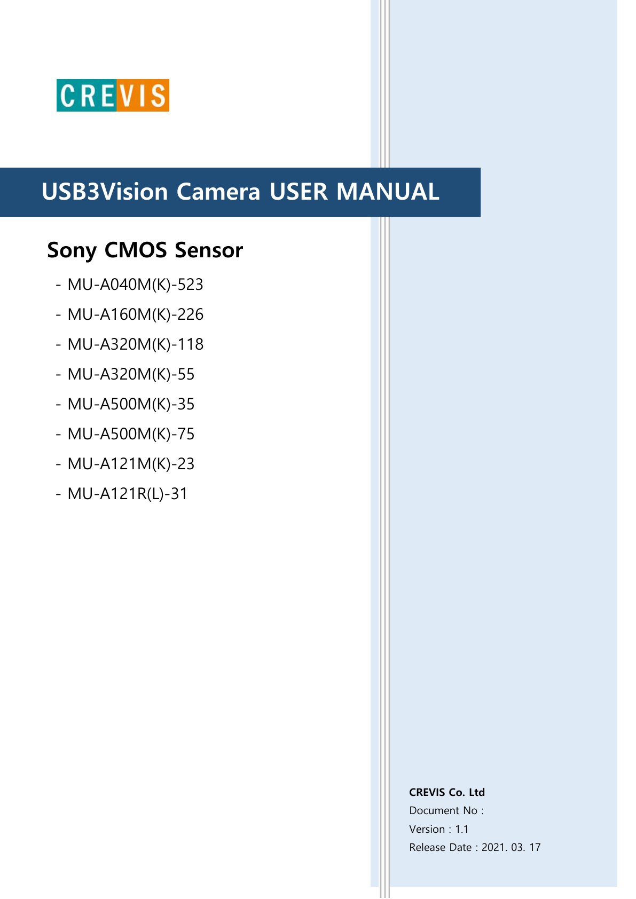
CREVIS Co. Ltd
Document No :
Version : 1.1
Release Date : 2021. 03. 17
USB3Vision Camera USER MANUAL
Sony CMOS Sensor
- MU-A040M(K)-523
- MU-A160M(K)-226
- MU-A320M(K)-118
- MU-A320M(K)-55
- MU-A500M(K)-35
- MU-A500M(K)-75
- MU-A121M(K)-23
- MU-A121R(L)-31
Contact
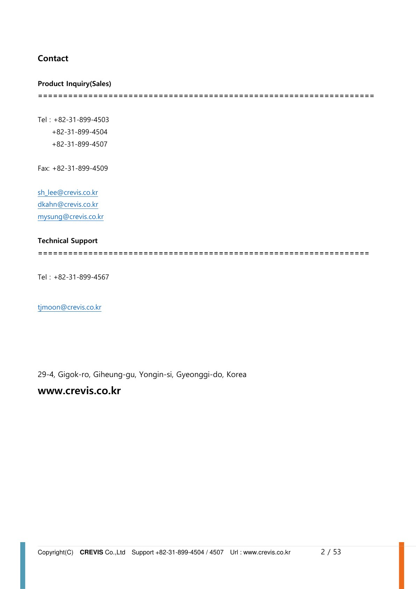
Contact
Product Inquiry(Sales)
===================================================================
Tel : +82-31-899-4503
+82-31-899-4504
+82-31-899-4507
Fax: +82-31-899-4509
sh_lee@crevis.co.kr
dkahn@crevis.co.kr
mysung@crevis.co.kr
Technical Support
==================================================================
Tel : +82-31-899-4567
tjmoon@crevis.co.kr
29-4, Gigok-ro, Giheung-gu, Yongin-si, Gyeonggi-do, Korea
www.crevis.co.kr
Table of Contents
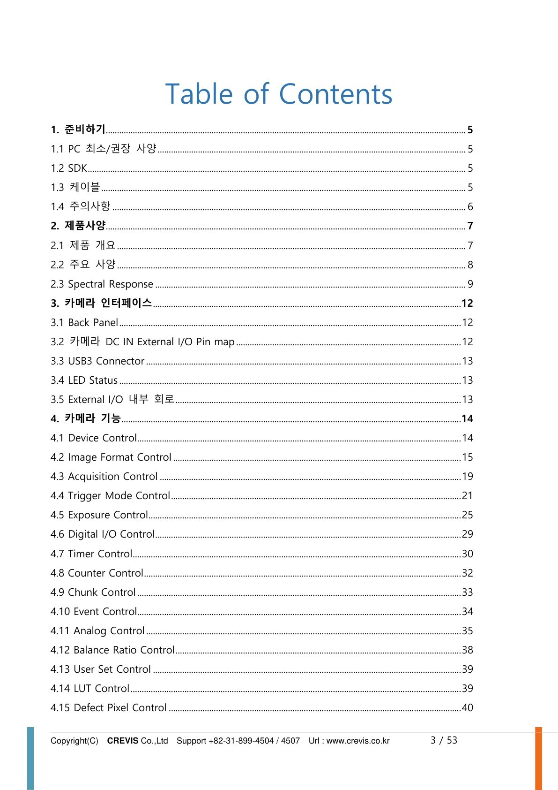
Table of Contents
1. 준비하기................................................................................................................................................................ 5
1.1 PC 최소/권장 사양 ......................................................................................................................................... 5
1.2 SDK ........................................................................................................................................................................ 5
1.3 케이블 .................................................................................................................................................................. 5
1.4 주의사항 ............................................................................................................................................................. 6
2. 제품사양................................................................................................................................................................ 7
2.1 제품 개요 ........................................................................................................................................................... 7
2.2 주요 사양 ........................................................................................................................................................... 8
2.3 Spectral Response .......................................................................................................................................... 9
3. 카메라 인터페이스 ......................................................................................................................................... 12
3.1 Back Panel ........................................................................................................................................................ 12
3.2 카메라 DC IN External I/O Pin map .................................................................................................... 12
3.3 USB3 Connector ............................................................................................................................................ 13
3.4 LED Status ........................................................................................................................................................ 13
3.5 External I/O 내부 회로 ............................................................................................................................... 13
4. 카메라 기능 ....................................................................................................................................................... 14
4.1 Device Control ................................................................................................................................................ 14
4.2 Image Format Control ................................................................................................................................ 15
4.3 Acquisition Control ...................................................................................................................................... 19
4.4 Trigger Mode Control ................................................................................................................................. 21
4.5 Exposure Control ........................................................................................................................................... 25
4.6 Digital I/O Control ........................................................................................................................................ 29
4.7 Timer Control .................................................................................................................................................. 30
4.8 Counter Control ............................................................................................................................................. 32
4.9 Chunk Control ................................................................................................................................................ 33
4.10 Event Control ................................................................................................................................................ 34
4.11 Analog Control ............................................................................................................................................ 35
4.12 Balance Ratio Control ............................................................................................................................... 38
4.13 User Set Control ......................................................................................................................................... 39
4.14 LUT Control ................................................................................................................................................... 39
4.15 Defect Pixel Control .................................................................................................................................. 40
4.18 Device Temperature State……………………………………………………………………………………………..44
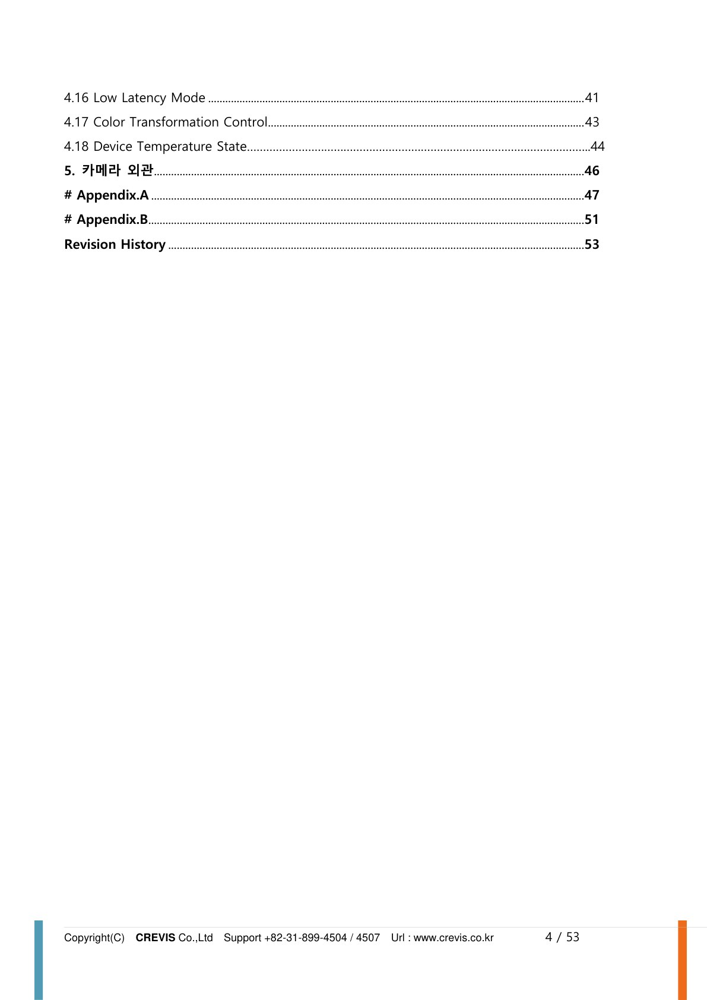
4.16 Low Latency Mode .................................................................................................................................... 41
4.17 Color Transformation Control ............................................................................................................... 43
4.18 Device Temperature State……………………………………………………………………………………………..44
5. 카메라 외관 ....................................................................................................................................................... 46
# Appendix.A ........................................................................................................................................................ 47
# Appendix.B ......................................................................................................................................................... 51
Revision History .................................................................................................................................................. 53
1. 준비하기
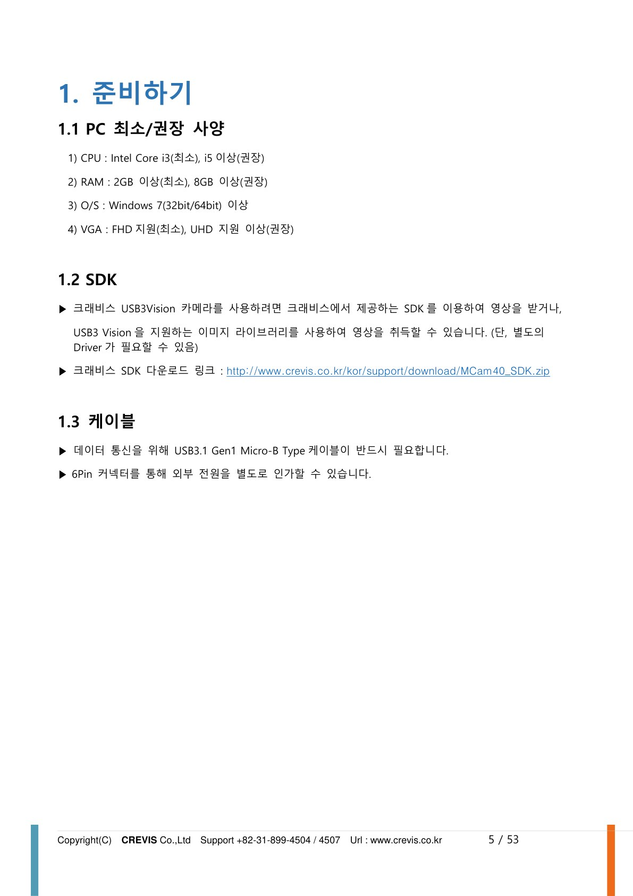
1. 준비하기
1.1 PC 최소/권장 사양
1) CPU : Intel Core i3(최소), i5 이상(권장)
2) RAM : 2GB 이상(최소), 8GB 이상(권장)
3) O/S : Windows 7(32bit/64bit) 이상
4) VGA : FHD 지원(최소), UHD 지원 이상(권장)
1.2 SDK
▶ 크래비스 USB3Vision 카메라를 사용하려면 크래비스에서 제공하는 SDK 를 이용하여 영상을 받거나,
USB3 Vision 을 지원하는 이미지 라이브러리를 사용하여 영상을 취득할 수 있습니다. (단, 별도의
Driver 가 필요할 수 있음)
▶ 크래비스 SDK 다운로드 링크 : http://www.crevis.co.kr/kor/support/download/MCam40_SDK.zip
1.3 케이블
▶ 데이터 통신을 위해 USB3.1 Gen1 Micro-B Type 케이블이 반드시 필요합니다.
▶ 6Pin 커넥터를 통해 외부 전원을 별도로 인가할 수 있습니다.
1.4 주의사항
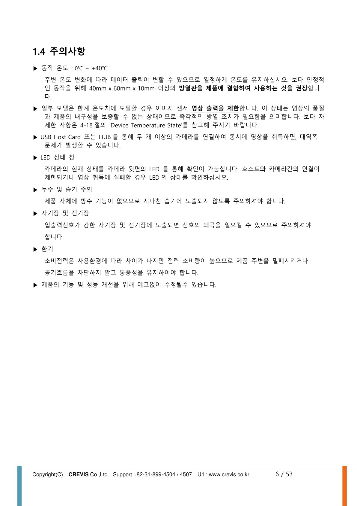
1.4 주의사항
▶ 동작 온도 : 0℃ ~ +40℃
주변 온도 변화에 따라 데이터 출력이 변할 수 있으므로 일정하게 온도를 유지하십시오. 보다 안정적
인 동작을 위해 40mm x 60mm x 10mm 이상의 방열판을 제품에 결합하여 사용하는 것을 권장합니
다.
▶ 일부 모델은 한계 온도치에 도달할 경우 이미지 센서 영상 출력을 제한합니다. 이 상태는 영상의 품질
과 제품의 내구성을 보증할 수 없는 상태이므로 즉각적인 방열 조치가 필요함을 의미합니다. 보다 자
세한 사항은 4-18 절의 ‘Device Temperature State’를 참고해 주시기 바랍니다.
▶ USB Host Card 또는 HUB 를 통해 두 개 이상의 카메라를 연결하여 동시에 영상을 취득하면, 대역폭
문제가 발생할 수 있습니다.
▶ LED 상태 창
카메라의 현재 상태를 카메라 뒷면의 LED 를 통해 확인이 가능합니다. 호스트와 카메라간의 연결이
제한되거나 영상 취득에 실패할 경우 LED 의 상태를 확인하십시오.
▶ 누수 및 습기 주의
제품 자체에 방수 기능이 없으므로 지나친 습기에 노출되지 않도록 주의하셔야 합니다.
▶ 자기장 및 전기장
입출력신호가 강한 자기장 및 전기장에 노출되면 신호의 왜곡을 일으킬 수 있으므로 주의하셔야
합니다.
▶ 환기
소비전력은 사용환경에 따라 차이가 나지만 전력 소비량이 높으므로 제품 주변을 밀폐시키거나
공기흐름을 차단하지 말고 통풍성을 유지하여야 합니다.
▶ 제품의 기능 및 성능 개선을 위해 예고없이 수정될수 있습니다.
2. 제품 사양
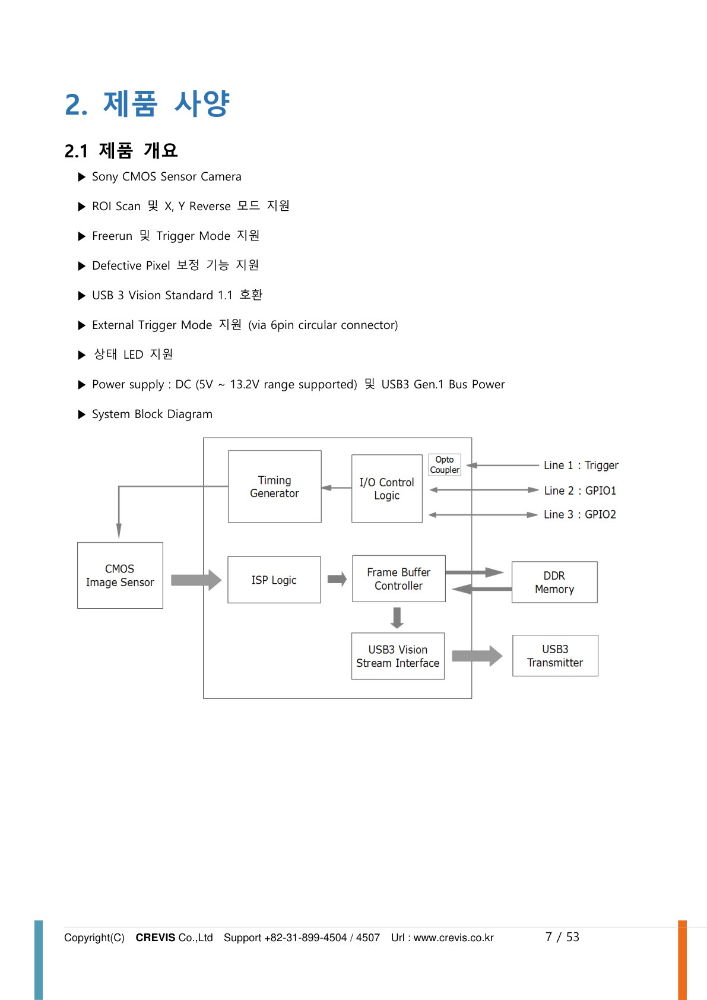
2. 제품 사양
2.1 제품 개요
▶ Sony CMOS Sensor Camera
▶ ROI Scan 및 X, Y Reverse 모드 지원
▶ Freerun 및 Trigger Mode 지원
▶ Defective Pixel 보정 기능 지원
▶ USB 3 Vision Standard 1.1 호환
▶ External Trigger Mode 지원 (via 6pin circular connector)
▶ 상태 LED 지원
▶ Power supply : DC (5V ~ 13.2V range supported) 및 USB3 Gen.1 Bus Power
▶ System Block Diagram
2.2 주요 사양
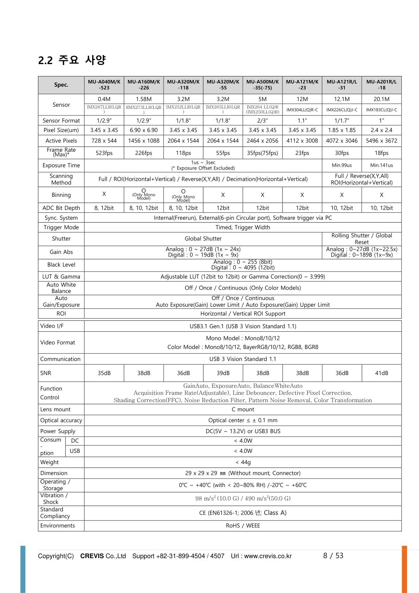
2.2 주요 사양
Spec.
MU-A040M/K
-523
MU-A160M/K
-226
MU-A320M/K
-118
MU-A320M/K
-55
MU-A500M/K
-35(-75)
MU-A121M/K
-23
MU-A121R/L
-31
MU-A201R/L
-18
Sensor
0.4M
1.58M
3.2M
3.2M
5M
12M
12.1M
20.1M
IMX287LLR(LQR
)
IIMX273LLR(LQR
)
IMX252LLR(LQR
)
IMX265LLR(LQR
)
IMX264 LL(Q)R
(IMX250LL(Q)R)
IMX304LL(Q)R-C
IMX226CL(Q)J-C
IMX183CL(Q)J-C
Sensor Format
1/2.9”
1/2.9”
1/1.8”
1/1.8”
2/3”
1.1”
1/1.7”
1”
Pixel Size(um)
3.45 x 3.45
6.90 x 6.90
3.45 x 3.45
3.45 x 3.45
3.45 x 3.45
3.45 x 3.45
1.85 x 1.85
2.4 x 2.4
Active Pixels
728 x 544
1456 x 1088
2064 x 1544
2064 x 1544
2464 x 2056
4112 x 3008
4072 x 3046
5496 x 3672
Frame Rate
(Max)*
523fps
226fps
118ps
55fps
35fps(75fps)
23fps
30fps
18fps
Exposure Time
1us ~ 3sec
(* Exposure Offset Excluded)
Min.99us
Min.141us
Scanning
Method
Full / ROI(Horizontal+Vertical) / Reverse(X,Y,All) / Decimation(Horizontal+Vertical)
Full / Reverse(X,Y,All)
ROI(Horizontal+Vertical)
Binning
X
O
(Only Mono
Model)
O
(Only Mono
Model)
X
X
X
X
X
ADC Bit Depth
8, 12bit
8, 10, 12bit
8, 10, 12bit
12bit
12bit
12bit
10, 12bit
10, 12bit
Sync. System
Internal(Freerun), External(6-pin Circular port), Software trigger via PC
Trigger Mode
Timed, Trigger Width
Shutter
Global Shutter
Rolling Shutter / Global
Reset
Gain Abs
Analog : 0 ~ 27dB (1x ~ 24x)
Digital : 0 ~ 19dB (1x ~ 9x)
Analog : 0~27dB (1x~22.5x)
Digital : 0~189B (1x~9x)
Black Level
Analog : 0 ~ 255 (8bit)
Digital : 0 ~ 4095 (12bit)
LUT & Gamma
Adjustable LUT (12bit to 12bit) or Gamma Correction(0 ~ 3.999)
Auto White
Balance
Off / Once / Continuous (Only Color Models)
Auto
Gain/Exposure
Off / Once / Continuous
Auto Exposure(Gain) Lower Limit / Auto Exposure(Gain) Upper Limit
ROI
Horizontal / Vertical ROI Support
Video I/F
USB3.1 Gen.1 (USB 3 Vision Standard 1.1)
Video Format
Mono Model : Mono8/10/12
Color Model : Mono8/10/12, BayerRG8/10/12, RGB8, BGR8
Communication
USB 3 Vision Standard 1.1
SNR
35dB
38dB
36dB
39dB
38dB
38dB
36dB
41dB
Function
Control
GainAuto, ExposureAuto, BalanceWhiteAuto
Acquisition Frame Rate(Adjustable), Line Debouncer, Defective Pixel Correction,
Shading Correction(FFC), Noise Reduction Filter, Pattern Noise Removal, Color Transformation
Lens mount
C mount
Optical accuracy
Optical center ≤ ± 0.1 mm
Power Supply
DC(5V ~ 13.2V) or USB3 BUS
Consum
-
ption
DC
< 4.0W
USB
< 4.0W
Weight
< 44g
Dimension
29 x 29 x 29 ㎜ (Without mount, Connector)
Operating /
Storage
0℃ ~ +40℃ (with < 20~80% RH) /-20℃ ~ +60℃
Vibration /
Shock
98 m/s2 (10.0 G) / 490 m/s2(50.0 G)
Standard
Compliancy
CE (EN61326-1; 2006 년; Class A)
Environments
RoHS / WEEE
2.3 Spectral Response
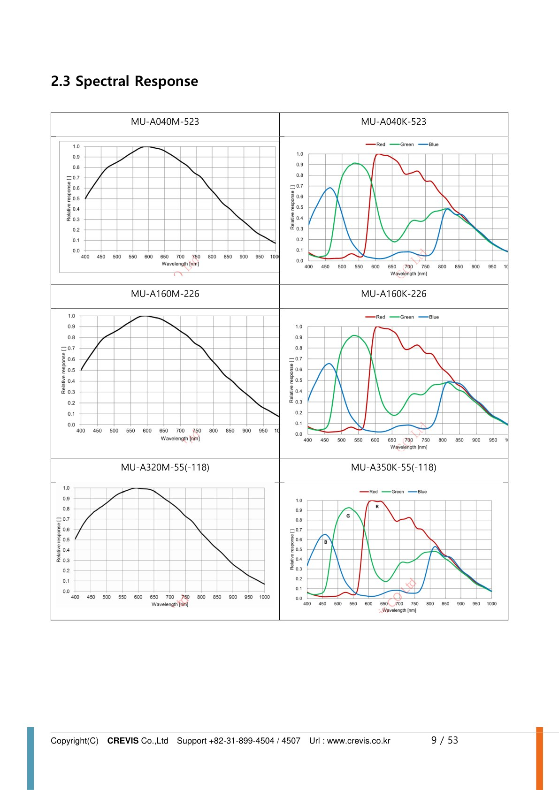
2.3 Spectral Response
MU-A040M-523
MU-A040K-523
MU-A160M-226
MU-A160K-226
MU-A320M-55(-118)
MU-A350K-55(-118)
PDF Page 10
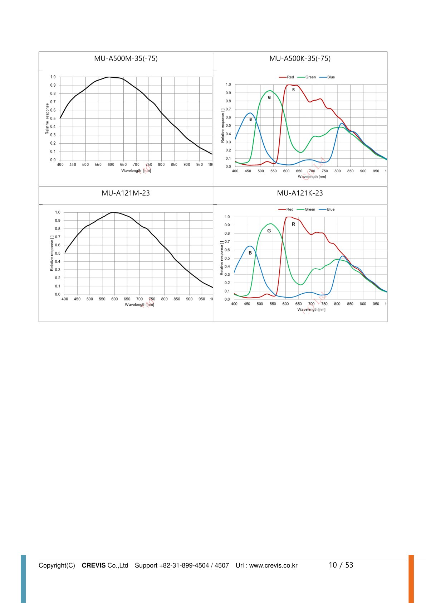
MU-A500M-35(-75)
MU-A500K-35(-75)
MU-A121M-23
MU-A121K-23
PDF Page 11
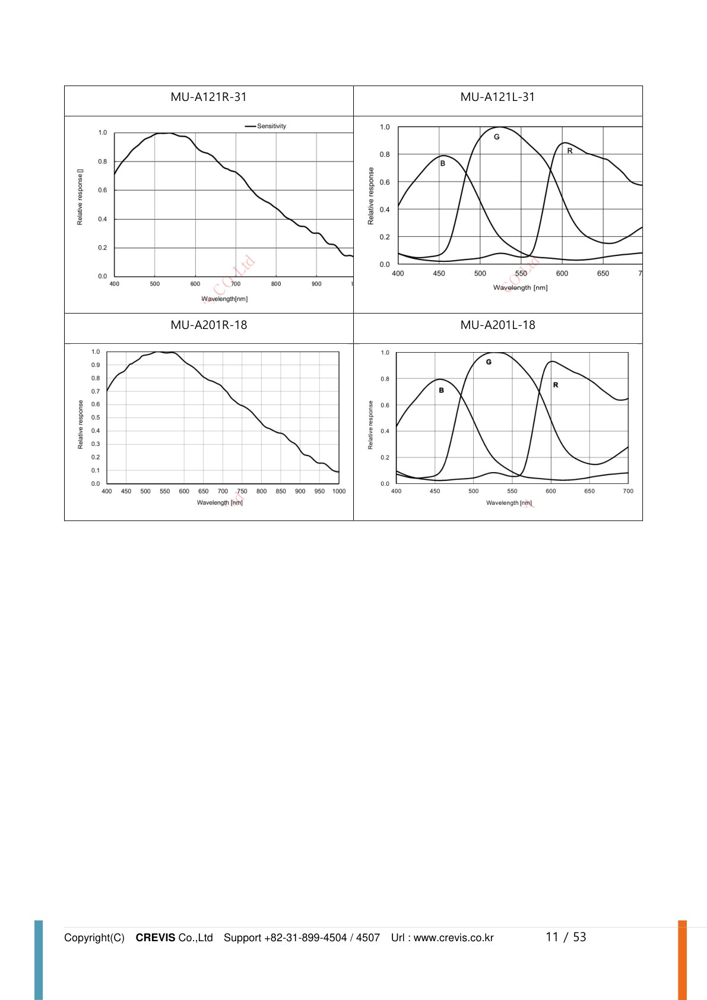
MU-A121R-31
MU-A121L-31
MU-A201R-18
MU-A201L-18
3. 카메라 인터페이스
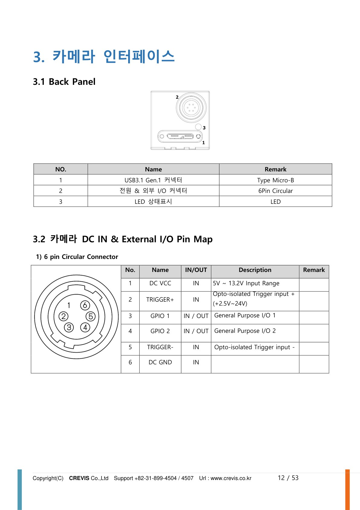
3. 카메라 인터페이스
3.1 Back Panel
NO.
Name
Remark
1
USB3.1 Gen.1 커넥터
Type Micro-B
2
전원 & 외부 I/O 커넥터
6Pin Circular
3
LED 상태표시
LED
3.2 카메라 DC IN & External I/O Pin Map
1) 6 pin Circular Connector
No.
Name
IN/OUT
Description
Remark
1
DC VCC
IN
5V ~ 13.2V Input Range
2
TRIGGER+
IN
Opto-isolated Trigger input +
(+2.5V~24V)
3
GPIO 1
IN / OUT General Purpose I/O 1
4
GPIO 2
IN / OUT General Purpose I/O 2
5
TRIGGER-
IN
Opto-isolated Trigger input -
6
DC GND
IN
3.3 USB3.1 Gen.1 Micro-B Type Connector
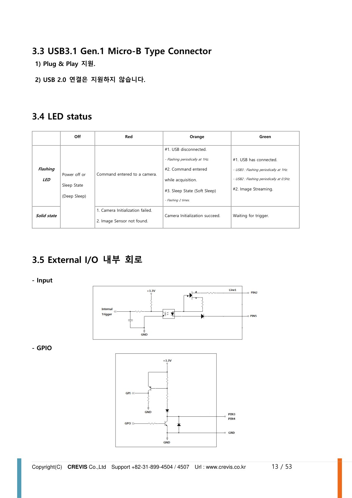
3.3 USB3.1 Gen.1 Micro-B Type Connector
1) Plug & Play 지원.
2) USB 2.0 연결은 지원하지 않습니다.
3.4 LED status
Off
Red
Orange
Green
Flashing
LED
Power off or
Sleep State
(Deep Sleep)
Command entered to a camera.
#1. USB disconnected.
- Flashing periodically at 1Hz.
#2. Command entered
while acquisition.
#3. Sleep State (Soft Sleep)
- Flashing 2 times.
#1. USB has connected.
- USB3 : Flashing periodically at 1Hz.
- USB2 : Flashing periodically at 0.5Hz.
#2. Image Streaming.
Solid state
1. Camera Initialization failed.
2. Image Sensor not found.
Camera Initialization succeed.
Waiting for trigger.
3.5 External I/O 내부 회로
- Input
- GPIO
4. 카메라 기능
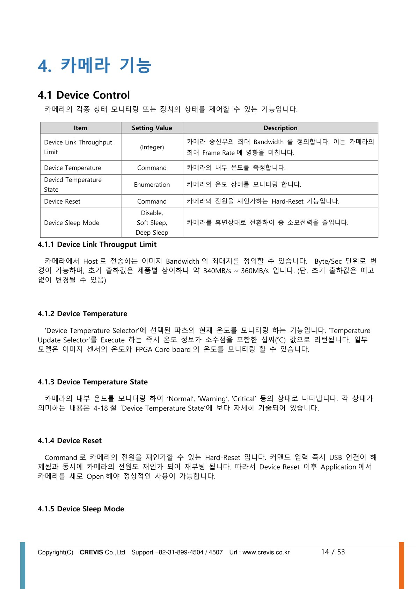
4. 카메라 기능
4.1 Device Control
카메라의 각종 상태 모니터링 또는 장치의 상태를 제어할 수 있는 기능입니다.
Item
Setting Value
Description
Device Link Throughput
Limit
(Integer)
카메라 송신부의 최대 Bandwidth 를 정의합니다. 이는 카메라의
최대 Frame Rate 에 영향을 미칩니다.
Device Temperature
Command
카메라의 내부 온도를 측정합니다.
Devicd Temperature
State
Enumeration
카메라의 온도 상태를 모니터링 합니다.
Device Reset
Command
카메라의 전원을 재인가하는 Hard-Reset 기능입니다.
Device Sleep Mode
Disable,
Soft Sleep,
Deep Sleep
카메라를 휴면상태로 전환하여 총 소모전력을 줄입니다.
4.1.1 Device Link Througput Limit
카메라에서 Host 로 전송하는 이미지 Bandwidth 의 최대치를 정의할 수 있습니다. Byte/Sec 단위로 변
경이 가능하며, 초기 출하값은 제품별 상이하나 약 340MB/s ~ 360MB/s 입니다. (단, 초기 출하값은 예고
없이 변경될 수 있음)
4.1.2 Device Temperature
‘Device Temperature Selector’에 선택된 파츠의 현재 온도를 모니터링 하는 기능입니다. ‘Temperature
Update Selector’를 Execute 하는 즉시 온도 정보가 소수점을 포함한 섭씨(℃) 값으로 리턴됩니다. 일부
모델은 이미지 센서의 온도와 FPGA Core board 의 온도를 모니터링 할 수 있습니다.
4.1.3 Device Temperature State
카메라의 내부 온도를 모니터링 하여 ‘Normal’, ‘Warning’, ‘Critical’ 등의 상태로 나타냅니다. 각 상태가
의미하는 내용은 4-18 절 ‘Device Temperature State’에 보다 자세히 기술되어 있습니다.
4.1.4 Device Reset
Command 로 카메라의 전원을 재인가할 수 있는 Hard-Reset 입니다. 커맨드 입력 즉시 USB 연결이 해
제됨과 동시에 카메라의 전원도 재인가 되어 재부팅 됩니다. 따라서 Device Reset 이후 Application 에서
카메라를 새로 Open 해야 정상적인 사용이 가능합니다.
4.1.5 Device Sleep Mode
4.2 Image Format Control
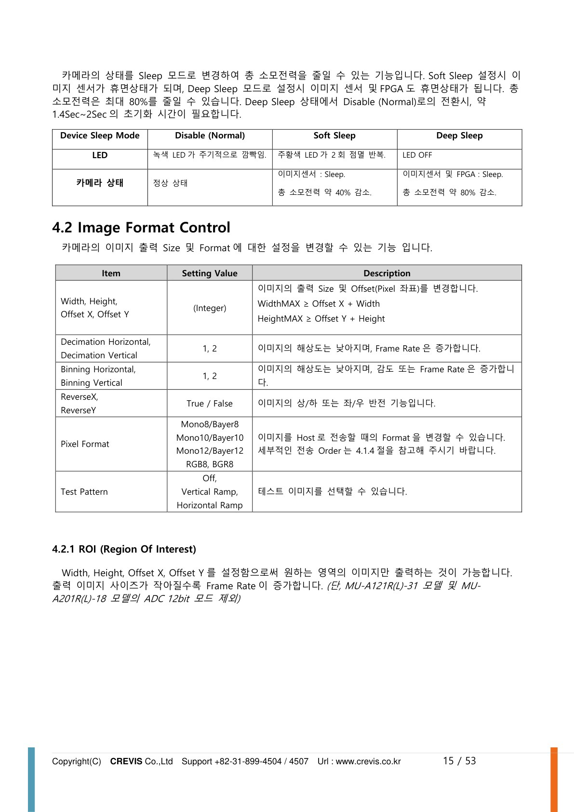
카메라의 상태를 Sleep 모드로 변경하여 총 소모전력을 줄일 수 있는 기능입니다. Soft Sleep 설정시 이
미지 센서가 휴면상태가 되며, Deep Sleep 모드로 설정시 이미지 센서 및FPGA 도 휴면상태가 됩니다. 총
소모전력은 최대 80%를 줄일 수 있습니다. Deep Sleep 상태에서 Disable (Normal)로의 전환시, 약
1.4Sec~2Sec 의 초기화 시간이 필요합니다.
Device Sleep Mode
Disable (Normal)
Soft Sleep
Deep Sleep
LED
녹색 LED 가 주기적으로 깜빡임.
주황색 LED 가 2 회 점멸 반복.
LED OFF
카메라 상태
정상 상태
이미지센서 : Sleep.
총 소모전력 약 40% 감소.
이미지센서 및 FPGA : Sleep.
총 소모전력 약 80% 감소.
4.2 Image Format Control
카메라의 이미지 출력 Size 및 Format 에 대한 설정을 변경할 수 있는 기능 입니다.
Item
Setting Value
Description
Width, Height,
Offset X, Offset Y
(Integer)
이미지의 출력 Size 및 Offset(Pixel 좌표)를 변경합니다.
WidthMAX ≥ Offset X + Width
HeightMAX ≥ Offset Y + Height
Decimation Horizontal,
Decimation Vertical
1, 2
이미지의 해상도는 낮아지며, Frame Rate 은 증가합니다.
Binning Horizontal,
Binning Vertical
1, 2
이미지의 해상도는 낮아지며, 감도 또는 Frame Rate 은 증가합니
다.
ReverseX,
ReverseY
True / False
이미지의 상/하 또는 좌/우 반전 기능입니다.
Pixel Format
Mono8/Bayer8
Mono10/Bayer10
Mono12/Bayer12
RGB8, BGR8
이미지를 Host 로 전송할 때의 Format 을 변경할 수 있습니다.
세부적인 전송 Order 는 4.1.4 절을 참고해 주시기 바랍니다.
Test Pattern
Off,
Vertical Ramp,
Horizontal Ramp
테스트 이미지를 선택할 수 있습니다.
4.2.1 ROI (Region Of Interest)
Width, Height, Offset X, Offset Y 를 설정함으로써 원하는 영역의 이미지만 출력하는 것이 가능합니다.
출력 이미지 사이즈가 작아질수록 Frame Rate 이 증가합니다. (단, MU-A121R(L)-31 모델 및 MU-
A201R(L)-18 모델의 ADC 12bit 모드 제외)
4.2.2 Decimation Horizontal / Vertical
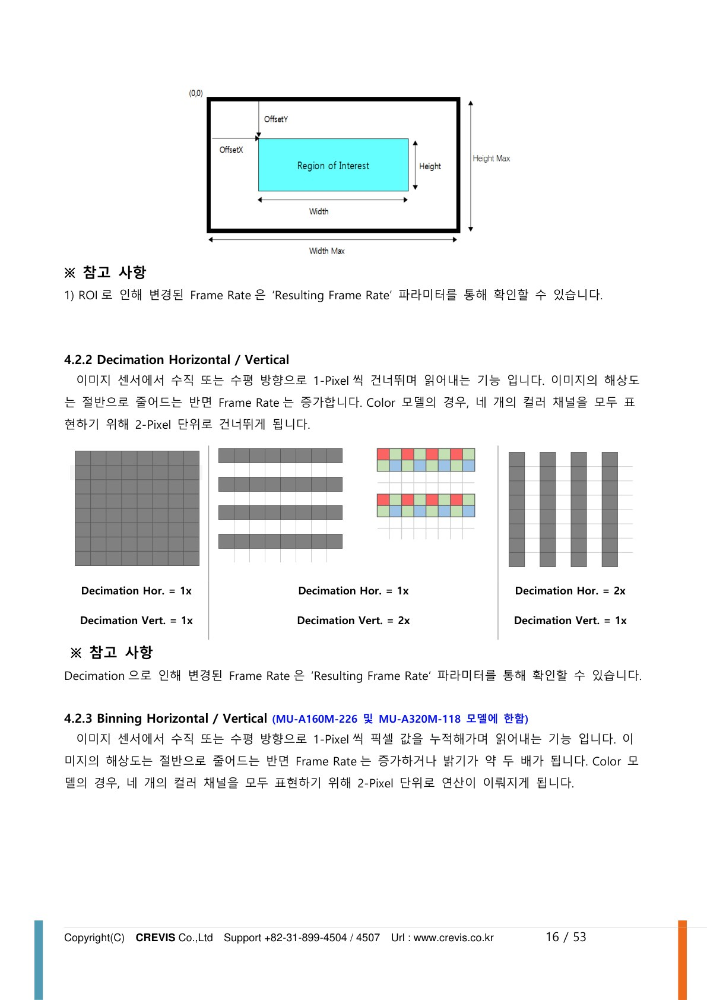
※ 참고 사항
1) ROI 로 인해 변경된 Frame Rate 은 ‘Resulting Frame Rate’ 파라미터를 통해 확인할 수 있습니다.
4.2.2 Decimation Horizontal / Vertical
이미지 센서에서 수직 또는 수평 방향으로 1-Pixel 씩 건너뛰며 읽어내는 기능 입니다. 이미지의 해상도
는 절반으로 줄어드는 반면 Frame Rate 는 증가합니다. Color 모델의 경우, 네 개의 컬러 채널을 모두 표
현하기 위해 2-Pixel 단위로 건너뛰게 됩니다.
Decimation Hor. = 1x
Decimation Vert. = 1x
Decimation Hor. = 1x
Decimation Vert. = 2x
Decimation Hor. = 2x
Decimation Vert. = 1x
※ 참고 사항
Decimation 으로 인해 변경된 Frame Rate 은 ‘Resulting Frame Rate’ 파라미터를 통해 확인할 수 있습니다.
4.2.3 Binning Horizontal / Vertical (MU-A160M-226 및 MU-A320M-118 모델에 한함)
이미지 센서에서 수직 또는 수평 방향으로 1-Pixel 씩 픽셀 값을 누적해가며 읽어내는 기능 입니다. 이
미지의 해상도는 절반으로 줄어드는 반면 Frame Rate 는 증가하거나 밝기가 약 두 배가 됩니다. Color 모
델의 경우, 네 개의 컬러 채널을 모두 표현하기 위해 2-Pixel 단위로 연산이 이뤄지게 됩니다.
4.2.4 Reverse X, Y
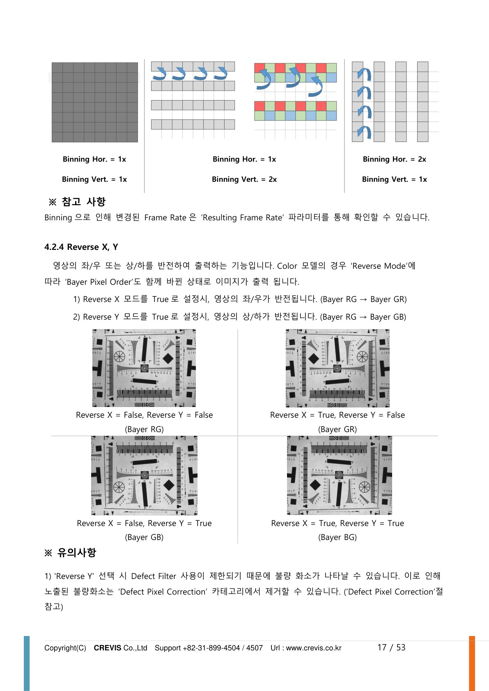
Binning Hor. = 1x
Binning Vert. = 1x
Binning Hor. = 1x
Binning Vert. = 2x
Binning Hor. = 2x
Binning Vert. = 1x
※ 참고 사항
Binning 으로 인해 변경된 Frame Rate 은 ‘Resulting Frame Rate’ 파라미터를 통해 확인할 수 있습니다.
4.2.4 Reverse X, Y
영상의 좌/우 또는 상/하를 반전하여 출력하는 기능입니다. Color 모델의 경우 ‘Reverse Mode’에
따라 ‘Bayer Pixel Order’도 함께 바뀐 상태로 이미지가 출력 됩니다.
1) Reverse X 모드를 True 로 설정시, 영상의 좌/우가 반전됩니다. (Bayer RG → Bayer GR)
2) Reverse Y 모드를 True 로 설정시, 영상의 상/하가 반전됩니다. (Bayer RG → Bayer GB)
Reverse X = False, Reverse Y = False
(Bayer RG)
Reverse X = True, Reverse Y = False
(Bayer GR)
Reverse X = False, Reverse Y = True
(Bayer GB)
Reverse X = True, Reverse Y = True
(Bayer BG)
※ 유의사항
1) 'Reverse Y' 선택 시 Defect Filter 사용이 제한되기 때문에 불량 화소가 나타날 수 있습니다. 이로 인해
노출된 불량화소는 ‘Defect Pixel Correction’ 카테고리에서 제거할 수 있습니다. (’Defect Pixel Correction’절
참고)
4.2.5 Pixel Format
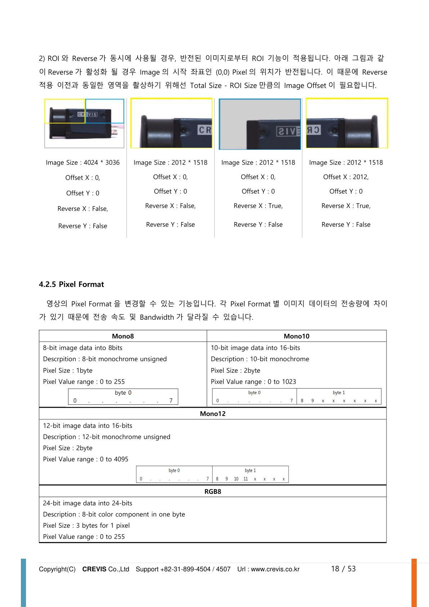
2) ROI 와 Reverse 가 동시에 사용될 경우, 반전된 이미지로부터 ROI 기능이 적용됩니다. 아래 그림과 같
이Reverse 가 활성화 될 경우 Image 의 시작 좌표인 (0,0) Pixel 의 위치가 반전됩니다. 이 때문에 Reverse
적용 이전과 동일한 영역을 촬상하기 위해선 Total Size - ROI Size 만큼의 Image Offset 이 필요합니다.
Image Size : 4024 * 3036
Offset X : 0,
Offset Y : 0
Reverse X : False,
Reverse Y : False
Image Size : 2012 * 1518
Offset X : 0,
Offset Y : 0
Reverse X : False,
Reverse Y : False
Image Size : 2012 * 1518
Offset X : 0,
Offset Y : 0
Reverse X : True,
Reverse Y : False
Image Size : 2012 * 1518
Offset X : 2012,
Offset Y : 0
Reverse X : True,
Reverse Y : False
4.2.5 Pixel Format
영상의 Pixel Format 을 변경할 수 있는 기능입니다. 각 Pixel Format 별 이미지 데이터의 전송량에 차이
가 있기 때문에 전송 속도 및 Bandwidth 가 달라질 수 있습니다.
Mono8
Mono10
8-bit image data into 8bits
Descrpition : 8-bit monochrome unsigned
Pixel Size : 1byte
Pixel Value range : 0 to 255
10-bit image data into 16-bits
Description : 10-bit monochrome
Pixel Size : 2byte
Pixel Value range : 0 to 1023
Mono12
12-bit image data into 16-bits
Description : 12-bit monochrome unsigned
Pixel Size : 2byte
Pixel Value range : 0 to 4095
RGB8
24-bit image data into 24-bits
Description : 8-bit color component in one byte
Pixel Size : 3 bytes for 1 pixel
Pixel Value range : 0 to 255
4.2.6 Test Pattern
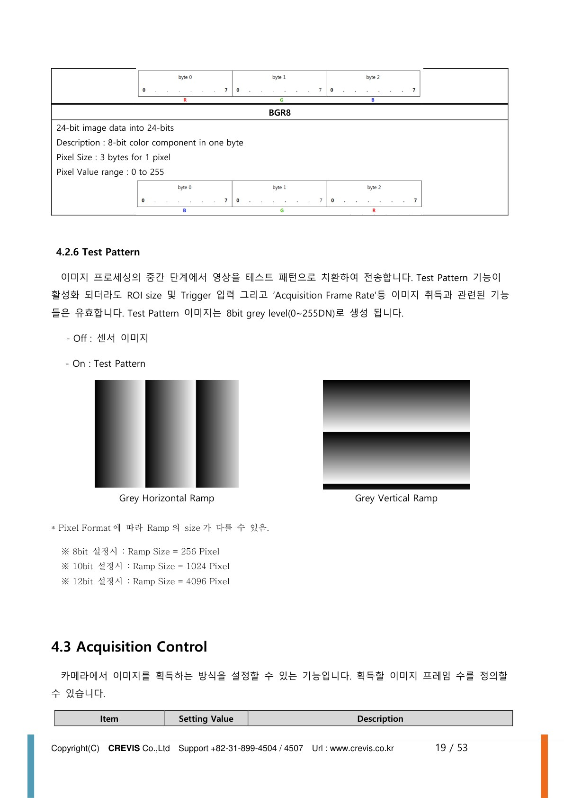
BGR8
24-bit image data into 24-bits
Description : 8-bit color component in one byte
Pixel Size : 3 bytes for 1 pixel
Pixel Value range : 0 to 255
4.2.6 Test Pattern
이미지 프로세싱의 중간 단계에서 영상을 테스트 패턴으로 치환하여 전송합니다. Test Pattern 기능이
활성화 되더라도 ROI size 및 Trigger 입력 그리고 ‘Acquisition Frame Rate’등 이미지 취득과 관련된 기능
들은 유효합니다. Test Pattern 이미지는 8bit grey level(0~255DN)로 생성 됩니다.
- Off : 센서 이미지
- On : Test Pattern
Grey Horizontal Ramp
Grey Vertical Ramp
* Pixel Format 에 따라 Ramp 의 size 가 다를 수 있음.
※ 8bit 설정시 : Ramp Size = 256 Pixel
※ 10bit 설정시 : Ramp Size = 1024 Pixel
※ 12bit 설정시 : Ramp Size = 4096 Pixel
4.3 Acquisition Control
카메라에서 이미지를 획득하는 방식을 설정할 수 있는 기능입니다. 획득할 이미지 프레임 수를 정의할
수 있습니다.
Item
Setting Value
Description
0 to 255
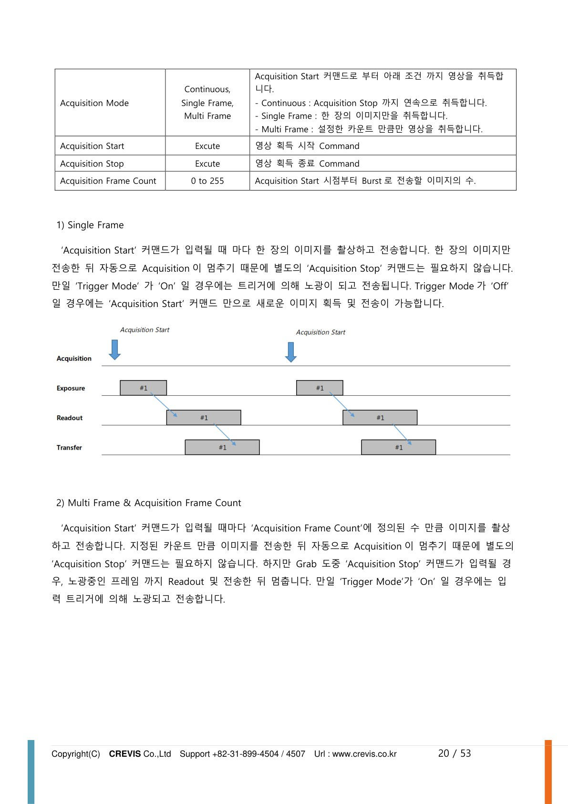
Acquisition Mode
Continuous,
Single Frame,
Multi Frame
Acquisition Start 커맨드로 부터 아래 조건 까지 영상을 취득합
니다.
- Continuous : Acquisition Stop 까지 연속으로 취득합니다.
- Single Frame : 한 장의 이미지만을 취득합니다.
- Multi Frame : 설정한 카운트 만큼만 영상을 취득합니다.
Acquisition Start
Excute
영상 획득 시작 Command
Acquisition Stop
Excute
영상 획득 종료 Command
Acquisition Frame Count
0 to 255
Acquisition Start 시점부터 Burst 로 전송할 이미지의 수.
1) Single Frame
‘Acquisition Start’ 커맨드가 입력될 때 마다 한 장의 이미지를 촬상하고 전송합니다. 한 장의 이미지만
전송한 뒤 자동으로 Acquisition 이 멈추기 때문에 별도의 ‘Acquisition Stop’ 커맨드는 필요하지 않습니다.
만일 ‘Trigger Mode’ 가 ‘On’ 일 경우에는 트리거에 의해 노광이 되고 전송됩니다. Trigger Mode 가 ‘Off’
일 경우에는 ‘Acquisition Start’ 커맨드 만으로 새로운 이미지 획득 및 전송이 가능합니다.
2) Multi Frame & Acquisition Frame Count
‘Acquisition Start’ 커맨드가 입력될 때마다 ‘Acquisition Frame Count’에 정의된 수 만큼 이미지를 촬상
하고 전송합니다. 지정된 카운트 만큼 이미지를 전송한 뒤 자동으로 Acquisition 이 멈추기 때문에 별도의
‘Acquisition Stop’ 커맨드는 필요하지 않습니다. 하지만 Grab 도중 ‘Acquisition Stop’ 커맨드가 입력될 경
우, 노광중인 프레임 까지 Readout 및 전송한 뒤 멈춥니다. 만일 ‘Trigger Mode’가 ‘On’ 일 경우에는 입
력 트리거에 의해 노광되고 전송합니다.
4.4 Trigger Mode Control
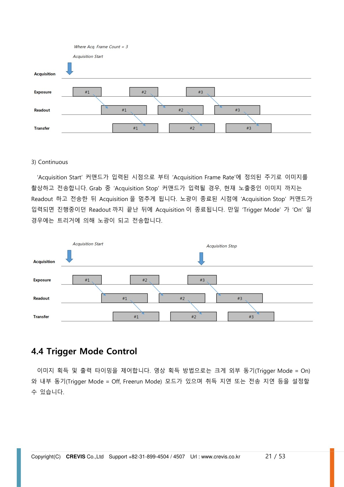
3) Continuous
‘Acquisition Start’ 커맨드가 입력된 시점으로 부터 ‘Acquisition Frame Rate’에 정의된 주기로 이미지를
촬상하고 전송합니다. Grab 중 ‘Acquisition Stop’ 커맨드가 입력될 경우, 현재 노출중인 이미지 까지는
Readout 하고 전송한 뒤 Acquisition 을 멈추게 됩니다. 노광이 종료된 시점에 ‘Acquisition Stop’ 커맨드가
입력되면 진행중이던 Readout 까지 끝난 뒤에 Acquisition 이 종료됩니다. 만일 ‘Trigger Mode’ 가 ‘On’ 일
경우에는 트리거에 의해 노광이 되고 전송합니다.
4.4 Trigger Mode Control
이미지 획득 및 출력 타이밍을 제어합니다. 영상 획득 방법으로는 크게 외부 동기(Trigger Mode = On)
와 내부 동기(Trigger Mode = Off, Freerun Mode) 모드가 있으며 취득 지연 또는 전송 지연 등을 설정할
수 있습니다.
10.2 us
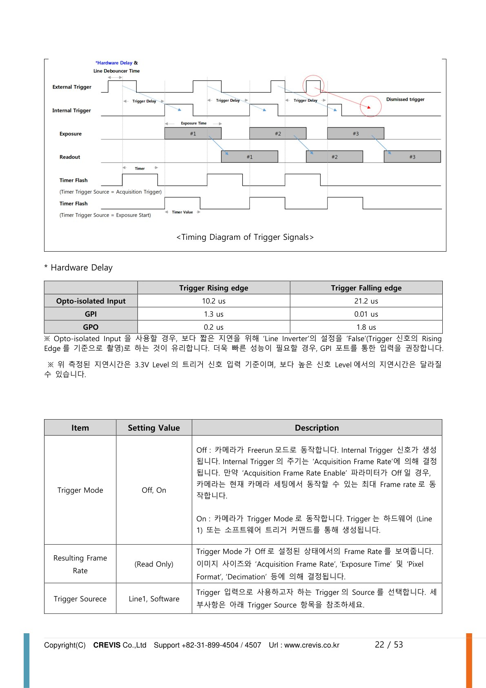
<Timing Diagram of Trigger Signals>
* Hardware Delay
※ Opto-isolated Input 을 사용할 경우, 보다 짧은 지연을 위해 ‘Line Inverter’의 설정을 ‘False’(Trigger 신호의 Rising
Edge 를 기준으로 촬영)로 하는 것이 유리합니다. 더욱 빠른 성능이 필요할 경우, GPI 포트를 통한 입력을 권장합니다.
※ 위 측정된 지연시간은 3.3V Level 의 트리거 신호 입력 기준이며, 보다 높은 신호 Level 에서의 지연시간은 달라질
수 있습니다.
Item
Setting Value
Description
Trigger Mode
Off, On
Off : 카메라가 Freerun 모드로 동작합니다. Internal Trigger 신호가 생성
됩니다. Internal Trigger 의 주기는 ‘Acquisition Frame Rate’에 의해 결정
됩니다. 만약 ‘Acquisition Frame Rate Enable’ 파라미터가 Off 일 경우,
카메라는 현재 카메라 세팅에서 동작할 수 있는 최대 Frame rate 로 동
작합니다.
On : 카메라가 Trigger Mode 로 동작합니다. Trigger 는 하드웨어 (Line
1) 또는 소프트웨어 트리거 커맨드를 통해 생성됩니다.
Resulting Frame
Rate
(Read Only)
Trigger Mode 가 Off 로 설정된 상태에서의 Frame Rate 를 보여줍니다.
이미지 사이즈와 ‘Acquisition Frame Rate’, ‘Exposure Time’ 및 ‘Pixel
Format’, ‘Decimation’ 등에 의해 결정됩니다.
Trigger Sourece
Line1, Software
Trigger 입력으로 사용하고자 하는 Trigger 의 Source 를 선택합니다. 세
부사항은 아래 Trigger Source 항목을 참조하세요.
Trigger Rising edge
Trigger Falling edge
Opto-isolated Input
10.2 us
21.2 us
GPI
1.3 us
0.01 us
GPO
0.2 us
1.8 us
0 to 57,844,677
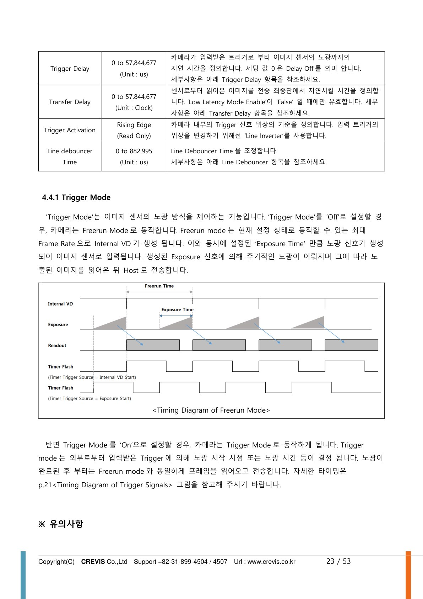
Trigger Delay
0 to 57,844,677
(Unit : us)
카메라가 입력받은 트리거로 부터 이미지 센서의 노광까지의
지연 시간을 정의합니다. 세팅 값 0 은 Delay Off 를 의미 합니다.
세부사항은 아래 Trigger Delay 항목을 참조하세요.
Transfer Delay
0 to 57,844,677
(Unit : Clock)
센서로부터 읽어온 이미지를 전송 최종단에서 지연시킬 시간을 정의합
니다. ‘Low Latency Mode Enable’이 ‘False’ 일 때에만 유효합니다. 세부
사항은 아래 Transfer Delay 항목을 참조하세요.
Trigger Activation
Rising Edge
(Read Only)
카메라 내부의 Trigger 신호 위상의 기준을 정의합니다. 입력 트리거의
위상을 변경하기 위해선 ‘Line Inverter’를 사용합니다.
Line debouncer
Time
0 to 882.995
(Unit : us)
Line Debouncer Time 을 조정합니다.
세부사항은 아래 Line Debouncer 항목을 참조하세요.
4.4.1 Trigger Mode
‘Trigger Mode’는 이미지 센서의 노광 방식을 제어하는 기능입니다. ‘Trigger Mode’를 ‘Off’로 설정할 경
우, 카메라는 Freerun Mode 로 동작합니다. Freerun mode 는 현재 설정 상태로 동작할 수 있는 최대
Frame Rate 으로 Internal VD 가 생성 됩니다. 이와 동시에 설정된 ‘Exposure Time’ 만큼 노광 신호가 생성
되어 이미지 센서로 입력됩니다. 생성된 Exposure 신호에 의해 주기적인 노광이 이뤄지며 그에 따라 노
출된 이미지를 읽어온 뒤 Host 로 전송합니다.
<Timing Diagram of Freerun Mode>
반면 Trigger Mode 를 ‘On’으로 설정할 경우, 카메라는 Trigger Mode 로 동작하게 됩니다. Trigger
mode 는 외부로부터 입력받은 Trigger 에 의해 노광 시작 시점 또는 노광 시간 등이 결정 됩니다. 노광이
완료된 후 부터는 Freerun mode 와 동일하게 프레임을 읽어오고 전송합니다. 자세한 타이밍은
p.21<Timing Diagram of Trigger Signals> 그림을 참고해 주시기 바랍니다.
※ 유의사항
4.4.2 Trigger Source
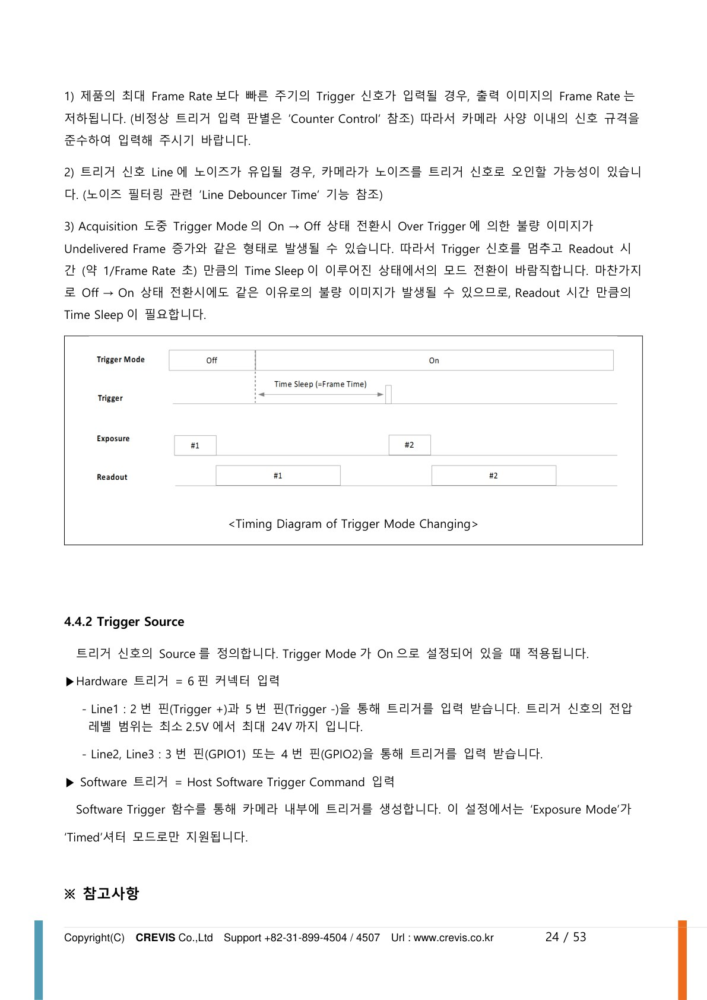
1) 제품의 최대 Frame Rate 보다 빠른 주기의 Trigger 신호가 입력될 경우, 출력 이미지의 Frame Rate 는
저하됩니다. (비정상 트리거 입력 판별은 ’Counter Control’ 참조) 따라서 카메라 사양 이내의 신호 규격을
준수하여 입력해 주시기 바랍니다.
2) 트리거 신호 Line 에 노이즈가 유입될 경우, 카메라가 노이즈를 트리거 신호로 오인할 가능성이 있습니
다. (노이즈 필터링 관련 ’Line Debouncer Time’ 기능 참조)
3) Acquisition 도중 Trigger Mode 의 On → Off 상태 전환시 Over Trigger 에 의한 불량 이미지가
Undelivered Frame 증가와 같은 형태로 발생될 수 있습니다. 따라서 Trigger 신호를 멈추고 Readout 시
간 (약 1/Frame Rate 초) 만큼의 Time Sleep 이 이루어진 상태에서의 모드 전환이 바람직합니다. 마찬가지
로 Off → On 상태 전환시에도 같은 이유로의 불량 이미지가 발생될 수 있으므로, Readout 시간 만큼의
Time Sleep 이 필요합니다.
<Timing Diagram of Trigger Mode Changing>
4.4.2 Trigger Source
트리거 신호의 Source 를 정의합니다. Trigger Mode 가 On 으로 설정되어 있을 때 적용됩니다.
▶Hardware 트리거 = 6 핀 커넥터 입력
- Line1 : 2 번 핀(Trigger +)과 5 번 핀(Trigger -)을 통해 트리거를 입력 받습니다. 트리거 신호의 전압
레벨 범위는 최소2.5V 에서 최대 24V 까지 입니다.
- Line2, Line3 : 3 번 핀(GPIO1) 또는 4 번 핀(GPIO2)을 통해 트리거를 입력 받습니다.
▶ Software 트리거 = Host Software Trigger Command 입력
Software Trigger 함수를 통해 카메라 내부에 트리거를 생성합니다. 이 설정에서는 ‘Exposure Mode’가
‘Timed’셔터 모드로만 지원됩니다.
※ 참고사항
4.4.3 Trigger Delay
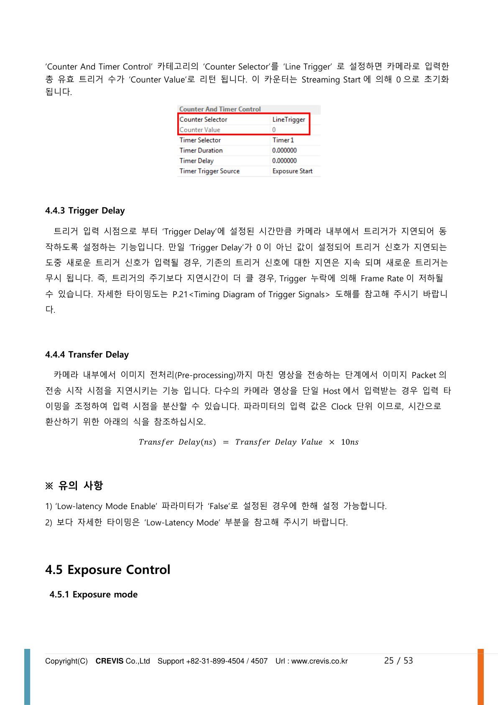
‘Counter And Timer Control’ 카테고리의 ‘Counter Selector’를 ‘Line Trigger’ 로 설정하면 카메라로 입력한
총 유효 트리거 수가 ‘Counter Value’로 리턴 됩니다. 이 카운터는 Streaming Start 에 의해 0 으로 초기화
됩니다.
4.4.3 Trigger Delay
트리거 입력 시점으로 부터 ‘Trigger Delay’에 설정된 시간만큼 카메라 내부에서 트리거가 지연되어 동
작하도록 설정하는 기능입니다. 만일 ‘Trigger Delay’가 0 이 아닌 값이 설정되어 트리거 신호가 지연되는
도중 새로운 트리거 신호가 입력될 경우, 기존의 트리거 신호에 대한 지연은 지속 되며 새로운 트리거는
무시 됩니다. 즉, 트리거의 주기보다 지연시간이 더 클 경우, Trigger 누락에 의해 Frame Rate 이 저하될
수 있습니다. 자세한 타이밍도는 P.21<Timing Diagram of Trigger Signals> 도해를 참고해 주시기 바랍니
다.
4.4.4 Transfer Delay
카메라 내부에서 이미지 전처리(Pre-processing)까지 마친 영상을 전송하는 단계에서 이미지 Packet 의
전송 시작 시점을 지연시키는 기능 입니다. 다수의 카메라 영상을 단일 Host 에서 입력받는 경우 입력 타
이밍을 조정하여 입력 시점을 분산할 수 있습니다. 파라미터의 입력 값은 Clock 단위 이므로, 시간으로
환산하기 위한 아래의 식을 참조하십시오.
𝑇𝑟𝑎𝑛𝑠𝑓𝑒𝑟 𝐷𝑒𝑙𝑎𝑦(𝑛𝑠) = 𝑇𝑟𝑎𝑛𝑠𝑓𝑒𝑟 𝐷𝑒𝑙𝑎𝑦 𝑉𝑎𝑙𝑢𝑒 × 10𝑛𝑠
※ 유의 사항
1) ‘Low-latency Mode Enable’ 파라미터가 ‘False’로 설정된 경우에 한해 설정 가능합니다.
2) 보다 자세한 타이밍은 ‘Low-Latency Mode’ 부분을 참고해 주시기 바랍니다.
4.5 Exposure Control
4.5.1 Exposure mode
4.5.2 Exposure Time
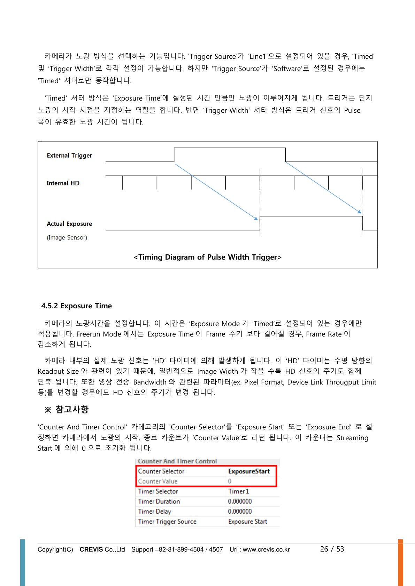
카메라가 노광 방식을 선택하는 기능입니다. ‘Trigger Source’가 ‘Line1’으로 설정되어 있을 경우, ‘Timed’
및 ‘Trigger Width’로 각각 설정이 가능합니다. 하지만 ‘Trigger Source’가 ‘Software’로 설정된 경우에는
‘Timed’ 셔터로만 동작합니다.
‘Timed’ 셔터 방식은 ‘Exposure Time’에 설정된 시간 만큼만 노광이 이루어지게 됩니다. 트리거는 단지
노광의 시작 시점을 지정하는 역할을 합니다. 반면 ‘Trigger Width’ 셔터 방식은 트리거 신호의 Pulse
폭이 유효한 노광 시간이 됩니다.
<Timing Diagram of Pulse Width Trigger>
4.5.2 Exposure Time
카메라의 노광시간을 설정합니다. 이 시간은 ‘Exposure Mode 가 ‘Timed’로 설정되어 있는 경우에만
적용됩니다. Freerun Mode 에서는 Exposure Time 이 Frame 주기 보다 길어질 경우, Frame Rate 이
감소하게 됩니다.
카메라 내부의 실제 노광 신호는 ‘HD’ 타이머에 의해 발생하게 됩니다. 이 ‘HD’ 타이머는 수평 방향의
Readout Size 와 관련이 있기 때문에, 일반적으로 Image Width 가 작을 수록 HD 신호의 주기도 함께
단축 됩니다. 또한 영상 전송 Bandwidth 와 관련된 파라미터(ex. Pixel Format, Device Link Througput Limit
등)를 변경할 경우에도 HD 신호의 주기가 변경 됩니다.
※ 참고사항
‘Counter And Timer Control’ 카테고리의 ‘Counter Selector’를 ‘Exposure Start’ 또는 ‘Exposure End’ 로 설
정하면 카메라에서 노광의 시작, 종료 카운트가 ‘Counter Value’로 리턴 됩니다. 이 카운터는 Streaming
Start 에 의해 0 으로 초기화 됩니다.
4.4.3 Sensor Shutter Mode (MU-A121R/L-31 및 MU-A201R/L-18 모델에 한함)
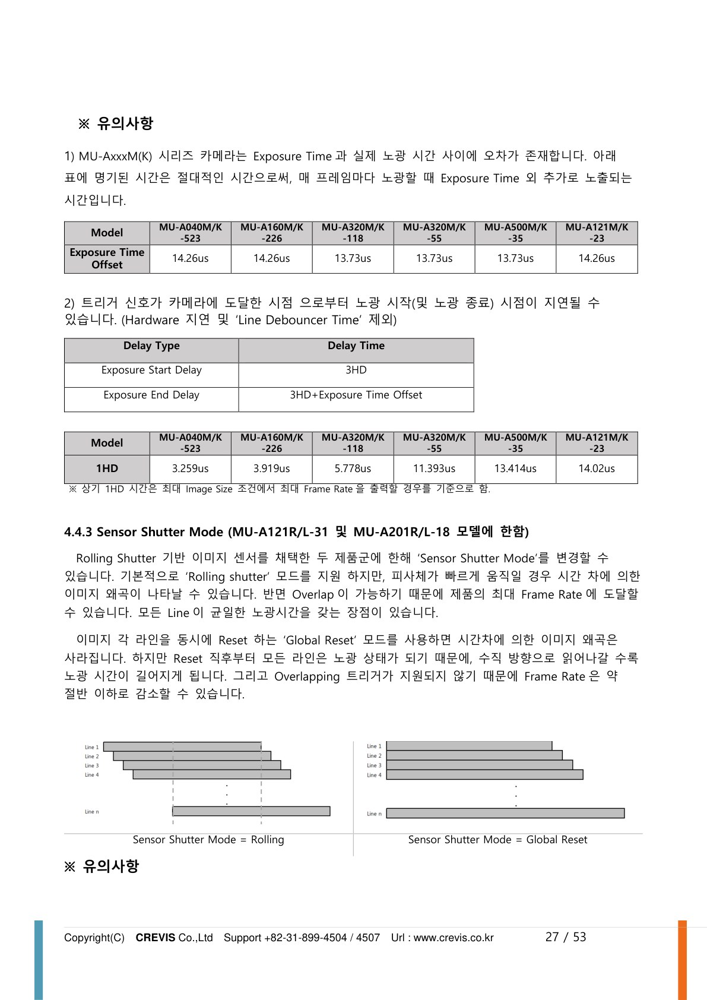
※ 유의사항
1) MU-AxxxM(K) 시리즈 카메라는 Exposure Time 과 실제 노광 시간 사이에 오차가 존재합니다. 아래
표에 명기된 시간은 절대적인 시간으로써, 매 프레임마다 노광할 때 Exposure Time 외 추가로 노출되는
시간입니다.
Model
MU-A040M/K
-523
MU-A160M/K
-226
MU-A320M/K
-118
MU-A320M/K
-55
MU-A500M/K
-35
MU-A121M/K
-23
Exposure Time
Offset
14.26us
14.26us
13.73us
13.73us
13.73us
14.26us
2) 트리거 신호가 카메라에 도달한 시점 으로부터 노광 시작(및 노광 종료) 시점이 지연될 수
있습니다. (Hardware 지연 및 ‘Line Debouncer Time’ 제외)
Delay Type
Delay Time
Exposure Start Delay
3HD
Exposure End Delay
3HD+Exposure Time Offset
Model
MU-A040M/K
-523
MU-A160M/K
-226
MU-A320M/K
-118
MU-A320M/K
-55
MU-A500M/K
-35
MU-A121M/K
-23
1HD
3.259us
3.919us
5.778us
11.393us
13.414us
14.02us
※ 상기 1HD 시간은 최대 Image Size 조건에서 최대 Frame Rate 을 출력할 경우를 기준으로 함.
4.4.3 Sensor Shutter Mode (MU-A121R/L-31 및 MU-A201R/L-18 모델에 한함)
Rolling Shutter 기반 이미지 센서를 채택한 두 제품군에 한해 ‘Sensor Shutter Mode’를 변경할 수
있습니다. 기본적으로 ‘Rolling shutter’ 모드를 지원 하지만, 피사체가 빠르게 움직일 경우 시간 차에 의한
이미지 왜곡이 나타날 수 있습니다. 반면 Overlap 이 가능하기 때문에 제품의 최대 Frame Rate 에 도달할
수 있습니다. 모든 Line 이 균일한 노광시간을 갖는 장점이 있습니다.
이미지 각 라인을 동시에 Reset 하는 ‘Global Reset’ 모드를 사용하면 시간차에 의한 이미지 왜곡은
사라집니다. 하지만 Reset 직후부터 모든 라인은 노광 상태가 되기 때문에, 수직 방향으로 읽어나갈 수록
노광 시간이 길어지게 됩니다. 그리고 Overlapping 트리거가 지원되지 않기 때문에 Frame Rate 은 약
절반 이하로 감소할 수 있습니다.
Sensor Shutter Mode = Rolling
Sensor Shutter Mode = Global Reset
※ 유의사항
4.5.4 Exposure Auto
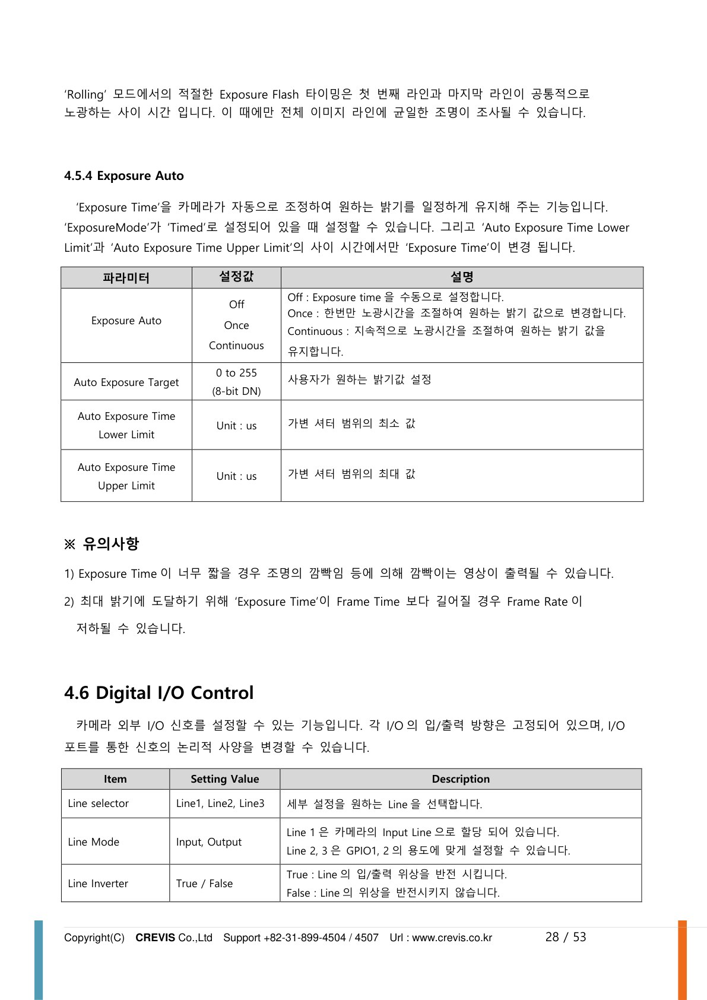
‘Rolling’ 모드에서의 적절한 Exposure Flash 타이밍은 첫 번째 라인과 마지막 라인이 공통적으로
노광하는 사이 시간 입니다. 이 때에만 전체 이미지 라인에 균일한 조명이 조사될 수 있습니다.
4.5.4 Exposure Auto
‘Exposure Time’을 카메라가 자동으로 조정하여 원하는 밝기를 일정하게 유지해 주는 기능입니다.
‘ExposureMode’가 ‘Timed’로 설정되어 있을 때 설정할 수 있습니다. 그리고 ‘Auto Exposure Time Lower
Limit’과 ‘Auto Exposure Time Upper Limit’의 사이 시간에서만 ‘Exposure Time’이 변경 됩니다.
파라미터
설정값
설명
Exposure Auto
Off
Once
Continuous
Off : Exposure time 을 수동으로 설정합니다.
Once : 한번만 노광시간을 조절하여 원하는 밝기 값으로 변경합니다.
Continuous : 지속적으로 노광시간을 조절하여 원하는 밝기 값을
유지합니다.
Auto Exposure Target
0 to 255
(8-bit DN)
사용자가 원하는 밝기값 설정
Auto Exposure Time
Lower Limit
Unit : us
가변 셔터 범위의 최소 값
Auto Exposure Time
Upper Limit
Unit : us
가변 셔터 범위의 최대 값
※ 유의사항
1) Exposure Time 이 너무 짧을 경우 조명의 깜빡임 등에 의해 깜빡이는 영상이 출력될 수 있습니다.
2) 최대 밝기에 도달하기 위해 ‘Exposure Time’이 Frame Time 보다 길어질 경우 Frame Rate 이
저하될 수 있습니다.
4.6 Digital I/O Control
카메라 외부 I/O 신호를 설정할 수 있는 기능입니다. 각 I/O 의 입/출력 방향은 고정되어 있으며, I/O
포트를 통한 신호의 논리적 사양을 변경할 수 있습니다.
Item
Setting Value
Description
Line selector
Line1, Line2, Line3
세부 설정을 원하는 Line 을 선택합니다.
Line Mode
Input, Output
Line 1 은 카메라의 Input Line 으로 할당 되어 있습니다.
Line 2, 3 은 GPIO1, 2 의 용도에 맞게 설정할 수 있습니다.
Line Inverter
True / False
True : Line 의 입/출력 위상을 반전 시킵니다.
False : Line 의 위상을 반전시키지 않습니다.
4.6.1 Line Debouncer
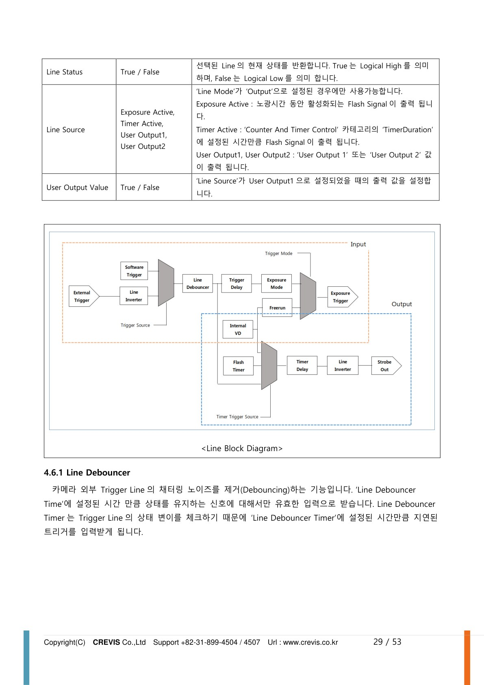
Line Status
True / False
선택된 Line 의 현재 상태를 반환합니다. True 는 Logical High 를 의미
하며, False 는 Logical Low 를 의미 합니다.
Line Source
Exposure Active,
Timer Active,
User Output1,
User Output2
‘Line Mode’가 ‘Output’으로 설정된 경우에만 사용가능합니다.
Exposure Active : 노광시간 동안 활성화되는 Flash Signal 이 출력 됩니
다.
Timer Active : ‘Counter And Timer Control’ 카테고리의 ‘TimerDuration’
에 설정된 시간만큼 Flash Signal 이 출력 됩니다.
User Output1, User Output2 : ‘User Output 1’ 또는 ‘User Output 2’ 값
이 출력 됩니다.
User Output Value
True / False
‘Line Source’가 User Output1 으로 설정되었을 때의 출력 값을 설정합
니다.
<Line Block Diagram>
4.6.1 Line Debouncer
카메라 외부 Trigger Line 의 채터링 노이즈를 제거(Debouncing)하는 기능입니다. ‘Line Debouncer
Time’에 설정된 시간 만큼 상태를 유지하는 신호에 대해서만 유효한 입력으로 받습니다. Line Debouncer
Timer 는 Trigger Line 의 상태 변이를 체크하기 때문에 ‘Line Debouncer Timer’에 설정된 시간만큼 지연된
트리거를 입력받게 됩니다.
4.7 Timer Control
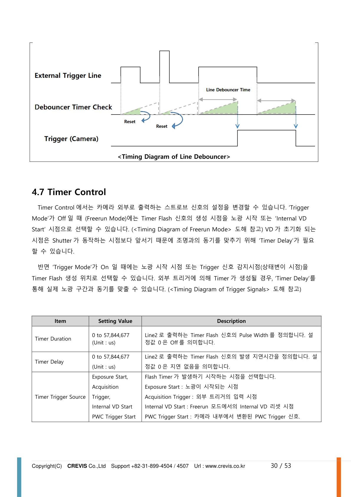
<Timing Diagram of Line Debouncer>
4.7 Timer Control
Timer Control 에서는 카메라 외부로 출력하는 스트로브 신호의 설정을 변경할 수 있습니다. ‘Trigger
Mode’가 Off 일 때 (Freerun Mode)에는 Timer Flash 신호의 생성 시점을 노광 시작 또는 ‘Internal VD
Start’ 시점으로 선택할 수 있습니다. (<Timing Diagram of Freerun Mode> 도해 참고) VD 가 초기화 되는
시점은 Shutter 가 동작하는 시점보다 앞서기 때문에 조명과의 동기를 맞추기 위해 ‘Timer Delay’가 필요
할 수 있습니다.
반면 ‘Trigger Mode’가 On 일 때에는 노광 시작 시점 또는 Trigger 신호 감지시점(상태변이 시점)을
Timer Flash 생성 위치로 선택할 수 있습니다. 외부 트리거에 의해 Timer 가 생성될 경우, ‘Timer Delay’를
통해 실제 노광 구간과 동기를 맞출 수 있습니다. (<Timing Diagram of Trigger Signals> 도해 참고)
Item
Setting Value
Description
Timer Duration
0 to 57,844,677
(Unit : us)
Line2 로 출력하는 Timer Flash 신호의 Pulse Width 를 정의합니다. 설
정값 0 은 Off 를 의미합니다.
Timer Delay
0 to 57,844,677
(Unit : us)
Line2 로 출력하는 Timer Flash 신호의 발생 지연시간을 정의합니다. 설
정값 0 은 지연 없음을 의미합니다.
Timer Trigger Source
Exposure Start,
Acquisition
Trigger,
Internal VD Start
PWC Trigger Start
Flash Timer 가 발생하기 시작하는 시점을 선택합니다.
Exposure Start : 노광이 시작되는 시점
Acquisition Trigger : 외부 트리거의 입력 시점
Internal VD Start : Freerun 모드에서의 Internal VD 리셋 시점
PWC Trigger Start : 카메라 내부에서 변환된 PWC Trigger 신호.
4.5 절의 ‘Exposure Control’에서 언급된 바와 같이 카메라에 입력된 Trigger 신호와 이미지 센서로의 실
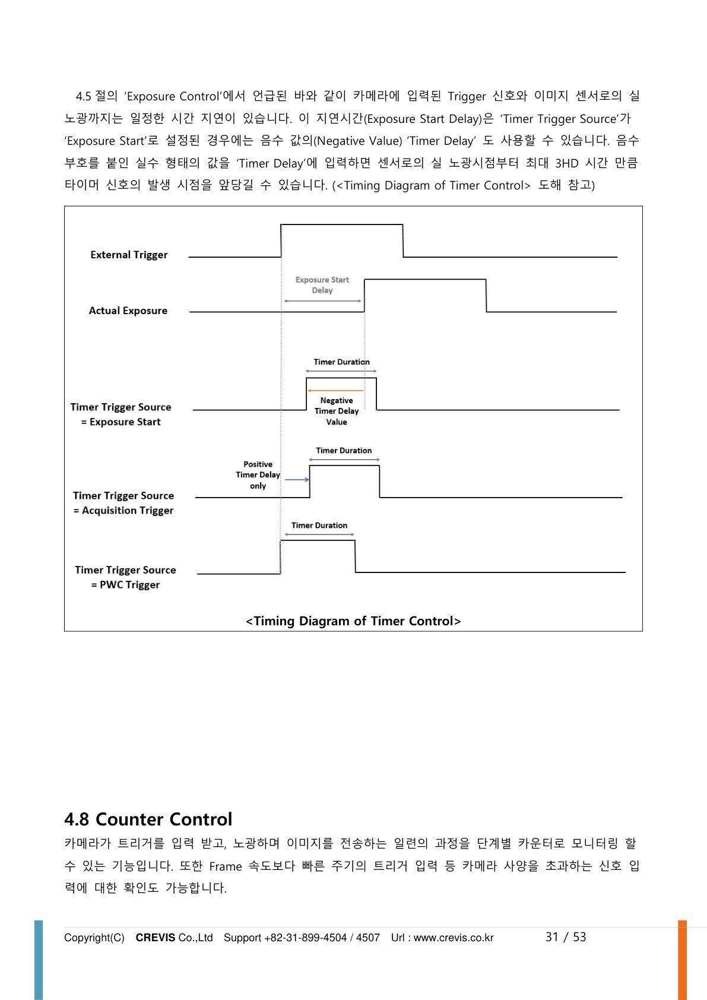
4.5 절의 ‘Exposure Control’에서 언급된 바와 같이 카메라에 입력된 Trigger 신호와 이미지 센서로의 실
노광까지는 일정한 시간 지연이 있습니다. 이 지연시간(Exposure Start Delay)은 ‘Timer Trigger Source’가
‘Exposure Start’로 설정된 경우에는 음수 값의(Negative Value) ‘Timer Delay’ 도 사용할 수 있습니다. 음수
부호를 붙인 실수 형태의 값을 ‘Timer Delay’에 입력하면 센서로의 실 노광시점부터 최대 3HD 시간 만큼
타이머 신호의 발생 시점을 앞당길 수 있습니다. (<Timing Diagram of Timer Control> 도해 참고)
<Timing Diagram of Timer Control>
4.8 Counter Control
카메라가 트리거를 입력 받고, 노광하며 이미지를 전송하는 일련의 과정을 단계별 카운터로 모니터링 할
수 있는 기능입니다. 또한 Frame 속도보다 빠른 주기의 트리거 입력 등 카메라 사양을 초과하는 신호 입
력에 대한 확인도 가능합니다.
4.9 Chunk Data Control
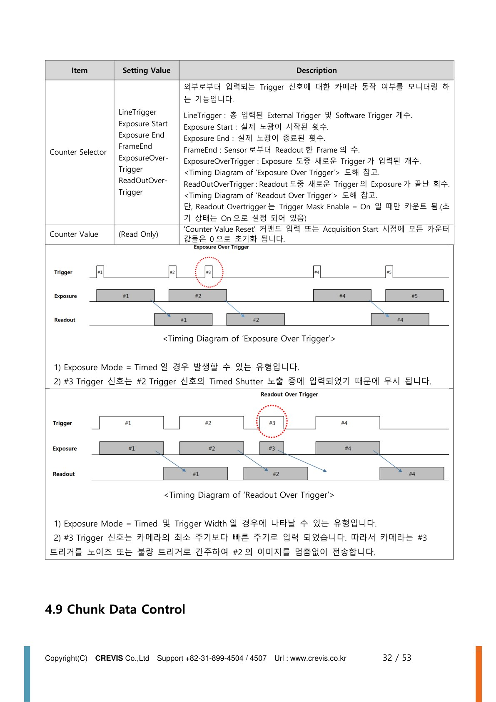
Item
Setting Value
Description
Counter Selector
LineTrigger
Exposure Start
Exposure End
FrameEnd
ExposureOver-
Trigger
ReadOutOver-
Trigger
외부로부터 입력되는 Trigger 신호에 대한 카메라 동작 여부를 모니터링 하
는 기능입니다.
LineTrigger : 총 입력된 External Trigger 및 Software Trigger 개수.
Exposure Start : 실제 노광이 시작된 횟수.
Exposure End : 실제 노광이 종료된 횟수.
FrameEnd : Sensor 로부터 Readout 한 Frame 의 수.
ExposureOverTrigger : Exposure 도중 새로운 Trigger 가 입력된 개수.
<Timing Diagram of ‘Exposure Over Trigger’> 도해 참고.
ReadOutOverTrigger : Readout 도중 새로운 Trigger 의 Exposure 가 끝난 회수.
<Timing Diagram of ‘Readout Over Trigger’> 도해 참고.
단, Readout Overtrigger 는 Trigger Mask Enable = On 일 때만 카운트 됨.(초
기 상태는 On 으로 설정 되어 있음)
Counter Value
(Read Only)
‘Counter Value Reset’ 커맨드 입력 또는 Acquisition Start 시점에 모든 카운터
값들은 0 으로 초기화 됩니다.
<Timing Diagram of ‘Exposure Over Trigger’>
1) Exposure Mode = Timed 일 경우 발생할 수 있는 유형입니다.
2) #3 Trigger 신호는 #2 Trigger 신호의 Timed Shutter 노출 중에 입력되었기 때문에 무시 됩니다.
<Timing Diagram of ‘Readout Over Trigger’>
1) Exposure Mode = Timed 및 Trigger Width 일 경우에 나타날 수 있는 유형입니다.
2) #3 Trigger 신호는 카메라의 최소 주기보다 빠른 주기로 입력 되었습니다. 따라서 카메라는 #3
트리거를 노이즈 또는 불량 트리거로 간주하여 #2 의 이미지를 멈춤없이 전송합니다.
4.9 Chunk Data Control
1 씩 증가합니다.
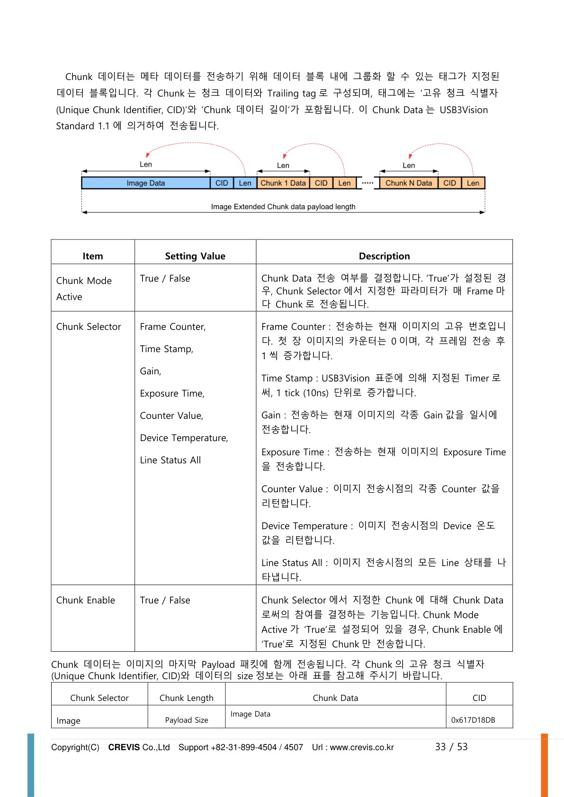
Chunk 데이터는 메타 데이터를 전송하기 위해 데이터 블록 내에 그룹화 할 수 있는 태그가 지정된
데이터 블록입니다. 각 Chunk 는 청크 데이터와 Trailing tag 로 구성되며, 태그에는 ‘고유 청크 식별자
(Unique Chunk Identifier, CID)’와 ‘Chunk 데이터 길이’가 포함됩니다. 이 Chunk Data 는 USB3Vision
Standard 1.1 에 의거하여 전송됩니다.
Item
Setting Value
Description
Chunk Mode
Active
True / False
Chunk Data 전송 여부를 결정합니다. ‘True’가 설정된 경
우, Chunk Selector 에서 지정한 파라미터가 매 Frame 마
다 Chunk 로 전송됩니다.
Chunk Selector
Frame Counter,
Time Stamp,
Gain,
Exposure Time,
Counter Value,
Device Temperature,
Line Status All
Frame Counter : 전송하는 현재 이미지의 고유 번호입니
다. 첫 장 이미지의 카운터는 0 이며, 각 프레임 전송 후
1 씩 증가합니다.
Time Stamp : USB3Vision 표준에 의해 지정된 Timer 로
써, 1 tick (10ns) 단위로 증가합니다.
Gain : 전송하는 현재 이미지의 각종 Gain 값을 일시에
전송합니다.
Exposure Time : 전송하는 현재 이미지의 Exposure Time
을 전송합니다.
Counter Value : 이미지 전송시점의 각종 Counter 값을
리턴합니다.
Device Temperature : 이미지 전송시점의 Device 온도
값을 리턴합니다.
Line Status All : 이미지 전송시점의 모든 Line 상태를 나
타냅니다.
Chunk Enable
True / False
Chunk Selector 에서 지정한 Chunk 에 대해 Chunk Data
로써의 참여를 결정하는 기능입니다. Chunk Mode
Active 가 ‘True’로 설정되어 있을 경우, Chunk Enable 에
‘True’로 지정된 Chunk 만 전송합니다.
Chunk 데이터는 이미지의 마지막 Payload 패킷에 함께 전송됩니다. 각 Chunk 의 고유 청크 식별자
(Unique Chunk Identifier, CID)와 데이터의 size 정보는 아래 표를 참고해 주시기 바랍니다.
Chunk Selector
Chunk Length
Chunk Data
CID
Image
Payload Size
Image Data
0x617D18DB
4.10 Event Control
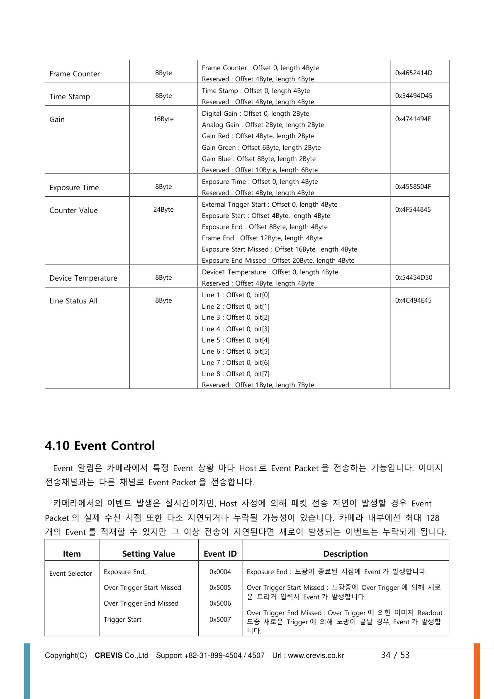
Frame Counter
8Byte
Frame Counter : Offset 0, length 4Byte
Reserved : Offset 4Byte, length 4Byte
0x4652414D
Time Stamp
8Byte
Time Stamp : Offset 0, length 4Byte
Reserved : Offset 4Byte, length 4Byte
0x54494D45
Gain
16Byte
Digital Gain : Offset 0, length 2Byte
Analog Gain : Offset 2Byte, length 2Byte
Gain Red : Offset 4Byte, length 2Byte
Gain Green : Offset 6Byte, length 2Byte
Gain Blue : Offset 8Byte, length 2Byte
Reserved : Offset 10Byte, length 6Byte
0x4741494E
Exposure Time
8Byte
Exposure Time : Offset 0, length 4Byte
Reserved : Offset 4Byte, length 4Byte
0x4558504F
Counter Value
24Byte
External Trigger Start : Offset 0, length 4Byte
Exposure Start : Offset 4Byte, length 4Byte
Exposure End : Offset 8Byte, length 4Byte
Frame End : Offset 12Byte, length 4Byte
Exposure Start Missed : Offset 16Byte, length 4Byte
Exposure End Missed : Offset 20Byte, length 4Byte
0x4F544845
Device Temperature
8Byte
Device1 Temperature : Offset 0, length 4Byte
Reserved : Offset 4Byte, length 4Byte
0x54454D50
Line Status All
8Byte
Line 1 : Offset 0, bit[0]
Line 2 : Offset 0, bit[1]
Line 3 : Offset 0, bit[2]
Line 4 : Offset 0, bit[3]
Line 5 : Offset 0, bit[4]
Line 6 : Offset 0, bit[5]
Line 7 : Offset 0, bit[6]
Line 8 : Offset 0, bit[7]
Reserved : Offset 1Byte, length 7Byte
0x4C494E45
4.10 Event Control
Event 알림은 카메라에서 특정 Event 상황 마다 Host 로 Event Packet 을 전송하는 기능입니다. 이미지
전송채널과는 다른 채널로 Event Packet 을 전송합니다.
카메라에서의 이벤트 발생은 실시간이지만, Host 사정에 의해 패킷 전송 지연이 발생할 경우 Event
Packet 의 실제 수신 시점 또한 다소 지연되거나 누락될 가능성이 있습니다. 카메라 내부에선 최대 128
개의 Event 를 적재할 수 있지만 그 이상 전송이 지연된다면 새로이 발생되는 이벤트는 누락되게 됩니다.
Item
Setting Value
Event ID
Description
Event Selector
Exposure End,
Over Trigger Start Missed
Over Trigger End Missed
Trigger Start
0x0004
0x5005
0x5006
0x5007
Exposure End : 노광이 종료된 시점에 Event 가 발생합니다.
Over Trigger Start Missed : 노광중에 Over Trigger 에 의해 새로
운 트리거 입력시 Event 가 발생합니다.
Over Trigger End Missed : Over Trigger 에 의한 이미지 Readout
도중 새로운 Trigger 에 의해 노광이 끝날 경우, Event 가 발생합
니다.
4.11 Analog Control
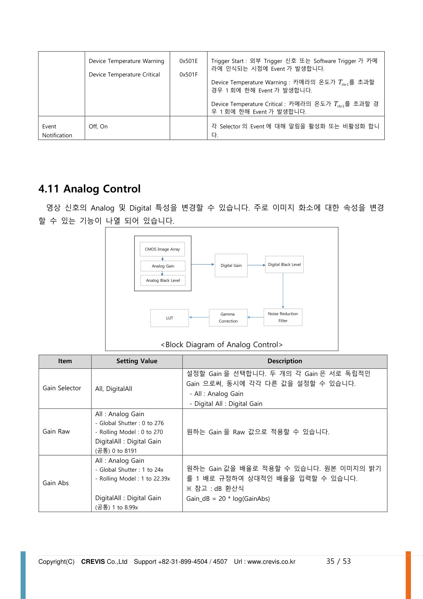
Device Temperature Warning
Device Temperature Critical
0x501E
0x501F
Trigger Start : 외부 Trigger 신호 또는 Software Trigger 가 카메
라에 인식되는 시점에 Event 가 발생합니다.
Device Temperature Warning : 카메라의 온도가 𝑇𝑡ℎ𝑟1를 초과할
경우 1 회에 한해 Event 가 발생합니다.
Device Temperature Critical : 카메라의 온도가 𝑇𝑡ℎ𝑟2를 초과할 경
우 1 회에 한해 Event 가 발생합니다.
Event
Notification
Off, On
각 Selector 의 Event 에 대해 알림을 활성화 또는 비활성화 합니
다.
4.11 Analog Control
영상 신호의 Analog 및 Digital 특성을 변경할 수 있습니다. 주로 이미지 화소에 대한 속성을 변경
할 수 있는 기능이 나열 되어 있습니다.
<Block Diagram of Analog Control>
Item
Setting Value
Description
Gain Selector
All, DigitalAll
설정할 Gain 을 선택합니다. 두 개의 각 Gain 은 서로 독립적인
Gain 으로써, 동시에 각각 다른 값을 설정할 수 있습니다.
- All : Analog Gain
- Digital All : Digital Gain
Gain Raw
All : Analog Gain
- Global Shutter : 0 to 276
- Rolling Model : 0 to 270
DigitalAll : Digital Gain
(공통) 0 to 8191
원하는 Gain 을 Raw 값으로 적용할 수 있습니다.
Gain Abs
All : Analog Gain
- Global Shutter : 1 to 24x
- Rolling Model : 1 to 22.39x
DigitalAll : Digital Gain
(공통) 1 to 8.99x
원하는 Gain 값을 배율로 적용할 수 있습니다. 원본 이미지의 밝기
를 1 배로 규정하여 상대적인 배율을 입력할 수 있습니다.
※ 참고 : dB 환산식
Gain_dB = 20 * log(GainAbs)
4.11.1 Gain, Gain Auto
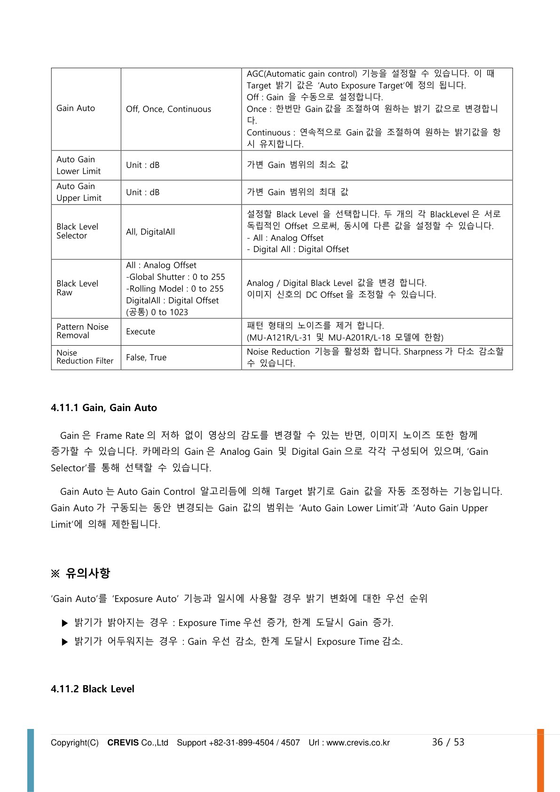
4.11.1 Gain, Gain Auto
Gain 은 Frame Rate 의 저하 없이 영상의 감도를 변경할 수 있는 반면, 이미지 노이즈 또한 함께
증가할 수 있습니다. 카메라의 Gain 은 Analog Gain 및 Digital Gain 으로 각각 구성되어 있으며, ‘Gain
Selector’를 통해 선택할 수 있습니다.
Gain Auto 는Auto Gain Control 알고리듬에 의해 Target 밝기로 Gain 값을 자동 조정하는 기능입니다.
Gain Auto 가 구동되는 동안 변경되는 Gain 값의 범위는 ‘Auto Gain Lower Limit’과 ‘Auto Gain Upper
Limit’에 의해 제한됩니다.
※ 유의사항
‘Gain Auto’를 ‘Exposure Auto’ 기능과 일시에 사용할 경우 밝기 변화에 대한 우선 순위
▶ 밝기가 밝아지는 경우 : Exposure Time 우선 증가, 한계 도달시 Gain 증가.
▶ 밝기가 어두워지는 경우 : Gain 우선 감소, 한계 도달시 Exposure Time 감소.
4.11.2 Black Level
Gain Auto
Off, Once, Continuous
AGC(Automatic gain control) 기능을 설정할 수 있습니다. 이 때
Target 밝기 값은 ‘Auto Exposure Target’에 정의 됩니다.
Off : Gain 을 수동으로 설정합니다.
Once : 한번만 Gain 값을 조절하여 원하는 밝기 값으로 변경합니
다.
Continuous : 연속적으로 Gain 값을 조절하여 원하는 밝기값을 항
시 유지합니다.
Auto Gain
Lower Limit
Unit : dB
가변 Gain 범위의 최소 값
Auto Gain
Upper Limit
Unit : dB
가변 Gain 범위의 최대 값
Black Level
Selector
All, DigitalAll
설정할 Black Level 을 선택합니다. 두 개의 각 BlackLevel 은 서로
독립적인 Offset 으로써, 동시에 다른 값을 설정할 수 있습니다.
- All : Analog Offset
- Digital All : Digital Offset
Black Level
Raw
All : Analog Offset
-Global Shutter : 0 to 255
-Rolling Model : 0 to 255
DigitalAll : Digital Offset
(공통) 0 to 1023
Analog / Digital Black Level 값을 변경 합니다.
이미지 신호의 DC Offset 을 조정할 수 있습니다.
Pattern Noise
Removal
Execute
패턴 형태의 노이즈를 제거 합니다.
(MU-A121R/L-31 및 MU-A201R/L-18 모델에 한함)
Noise
Reduction Filter
False, True
Noise Reduction 기능을 활성화 합니다. Sharpness 가 다소 감소할
수 있습니다.
4.11.3 Gamma
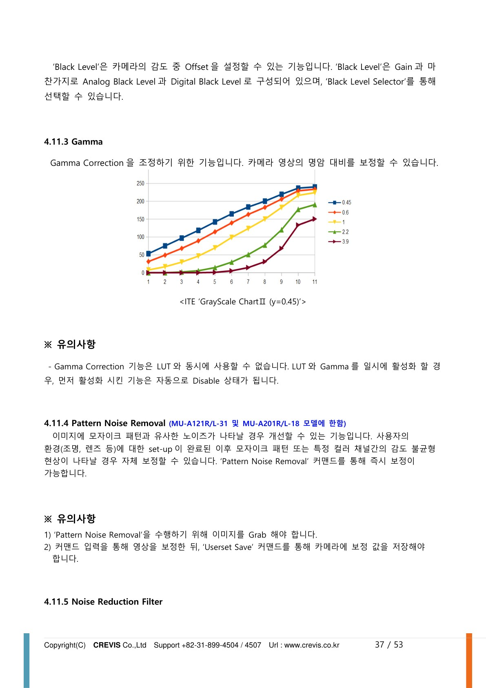
‘Black Level’은 카메라의 감도 중 Offset 을 설정할 수 있는 기능입니다. ‘Black Level’은 Gain 과 마
찬가지로 Analog Black Level 과 Digital Black Level 로 구성되어 있으며, ‘Black Level Selector’를 통해
선택할 수 있습니다.
4.11.3 Gamma
Gamma Correction 을 조정하기 위한 기능입니다. 카메라 영상의 명암 대비를 보정할 수 있습니다.
<ITE ‘GrayScale ChartⅡ (y=0.45)’>
※ 유의사항
- Gamma Correction 기능은 LUT 와 동시에 사용할 수 없습니다. LUT 와 Gamma 를 일시에 활성화 할 경
우, 먼저 활성화 시킨 기능은 자동으로 Disable 상태가 됩니다.
4.11.4 Pattern Noise Removal (MU-A121R/L-31 및 MU-A201R/L-18 모델에 한함)
이미지에 모자이크 패턴과 유사한 노이즈가 나타날 경우 개선할 수 있는 기능입니다. 사용자의
환경(조명, 렌즈 등)에 대한 set-up 이 완료된 이후 모자이크 패턴 또는 특정 컬러 채널간의 감도 불균형
현상이 나타날 경우 자체 보정할 수 있습니다. ‘Pattern Noise Removal’ 커맨드를 통해 즉시 보정이
가능합니다.
※ 유의사항
1) ‘Pattern Noise Removal’을 수행하기 위해 이미지를 Grab 해야 합니다.
2) 커맨드 입력을 통해 영상을 보정한 뒤, ‘Userset Save’ 커맨드를 통해 카메라에 보정 값을 저장해야
합니다.
4.11.5 Noise Reduction Filter
4.12 Balance Ratio Control
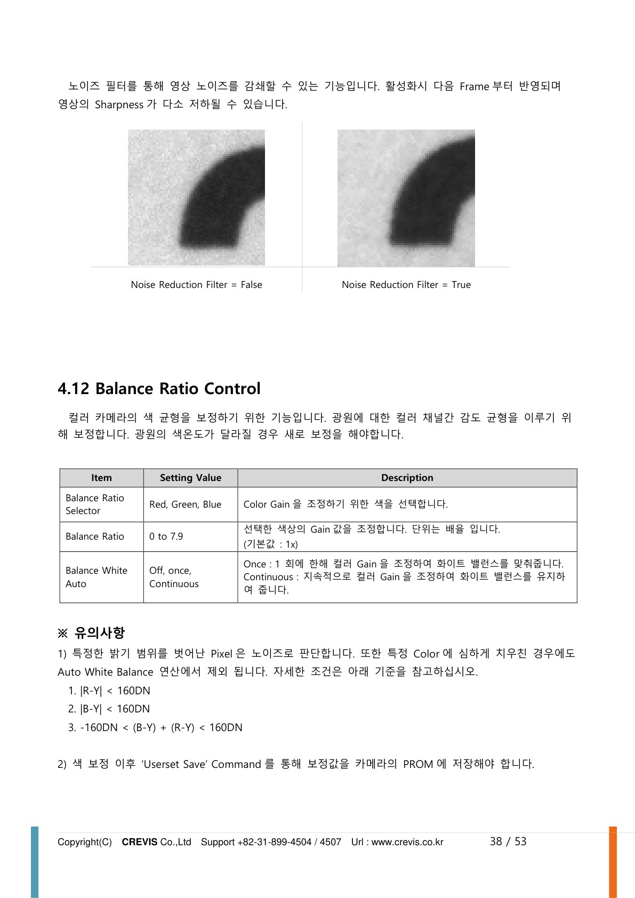
노이즈 필터를 통해 영상 노이즈를 감쇄할 수 있는 기능입니다. 활성화시 다음 Frame 부터 반영되며
영상의 Sharpness 가 다소 저하될 수 있습니다.
Noise Reduction Filter = False
Noise Reduction Filter = True
4.12 Balance Ratio Control
컬러 카메라의 색 균형을 보정하기 위한 기능입니다. 광원에 대한 컬러 채널간 감도 균형을 이루기 위
해 보정합니다. 광원의 색온도가 달라질 경우 새로 보정을 해야합니다.
Item
Setting Value
Description
Balance Ratio
Selector
Red, Green, Blue
Color Gain 을 조정하기 위한 색을 선택합니다.
Balance Ratio
0 to 7.9
선택한 색상의 Gain 값을 조정합니다. 단위는 배율 입니다.
(기본값 : 1x)
Balance White
Auto
Off, once,
Continuous
Once : 1 회에 한해 컬러 Gain 을 조정하여 화이트 밸런스를 맞춰줍니다.
Continuous : 지속적으로 컬러 Gain 을 조정하여 화이트 밸런스를 유지하
여 줍니다.
※ 유의사항
1) 특정한 밝기 범위를 벗어난 Pixel 은 노이즈로 판단합니다. 또한 특정 Color 에 심하게 치우친 경우에도
Auto White Balance 연산에서 제외 됩니다. 자세한 조건은 아래 기준을 참고하십시오.
1. |R-Y| < 160DN
2. |B-Y| < 160DN
3. -160DN < (B-Y) + (R-Y) < 160DN
2) 색 보정 이후 ‘Userset Save’ Command 를 통해 보정값을 카메라의 PROM 에 저장해야 합니다.
4.13 User Set Control
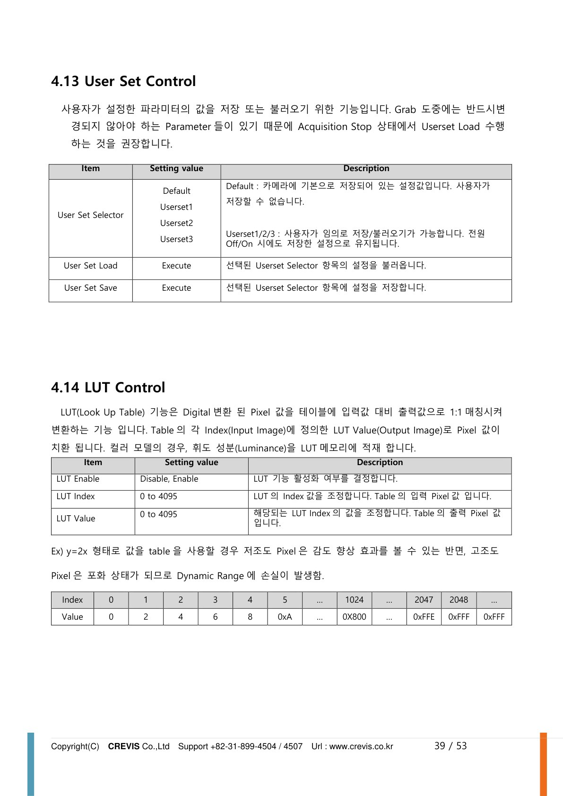
4.13 User Set Control
사용자가 설정한 파라미터의 값을 저장 또는 불러오기 위한 기능입니다. Grab 도중에는 반드시변
경되지 않아야 하는 Parameter 들이 있기 때문에 Acquisition Stop 상태에서 Userset Load 수행
하는 것을 권장합니다.
Item
Setting value
Description
User Set Selector
Default
Userset1
Userset2
Userset3
Default : 카메라에 기본으로 저장되어 있는 설정값입니다. 사용자가
저장할 수 없습니다.
Userset1/2/3 : 사용자가 임의로 저장/불러오기가 가능합니다. 전원
Off/On 시에도 저장한 설정으로 유지됩니다.
User Set Load
Execute
선택된 Userset Selector 항목의 설정을 불러옵니다.
User Set Save
Execute
선택된 Userset Selector 항목에 설정을 저장합니다.
4.14 LUT Control
LUT(Look Up Table) 기능은 Digital 변환 된 Pixel 값을 테이블에 입력값 대비 출력값으로 1:1 매칭시켜
변환하는 기능 입니다. Table 의 각 Index(Input Image)에 정의한 LUT Value(Output Image)로 Pixel 값이
치환 됩니다. 컬러 모델의 경우, 휘도 성분(Luminance)을 LUT 메모리에 적재 합니다.
Item
Setting value
Description
LUT Enable
Disable, Enable
LUT 기능 활성화 여부를 결정합니다.
LUT Index
0 to 4095
LUT 의 Index 값을 조정합니다. Table 의 입력 Pixel 값 입니다.
LUT Value
0 to 4095
해당되는 LUT Index 의 값을 조정합니다. Table 의 출력 Pixel 값
입니다.
Ex) y=2x 형태로 값을 table 을 사용할 경우 저조도 Pixel 은 감도 향상 효과를 볼 수 있는 반면, 고조도
Pixel 은 포화 상태가 되므로 Dynamic Range 에 손실이 발생함.
Index
0
1
2
3
4
5
…
1024
…
2047
2048
…
Value
0
2
4
6
8
0xA
…
0X800
…
0xFFE
0xFFF
0xFFF
4.15 Defect Pixel Correction
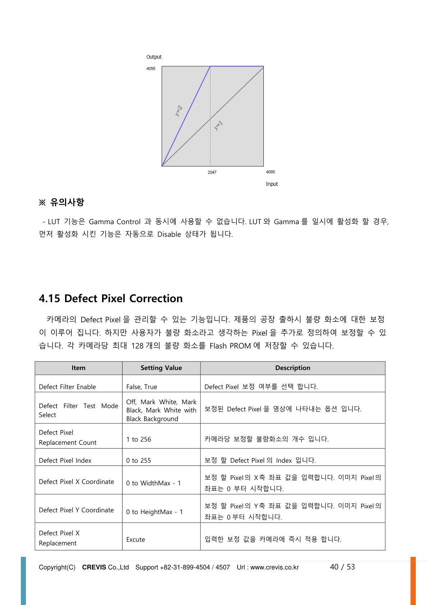
※ 유의사항
- LUT 기능은 Gamma Control 과 동시에 사용할 수 없습니다. LUT 와 Gamma 를 일시에 활성화 할 경우,
먼저 활성화 시킨 기능은 자동으로 Disable 상태가 됩니다.
4.15 Defect Pixel Correction
카메라의 Defect Pixel 을 관리할 수 있는 기능입니다. 제품의 공장 출하시 불량 화소에 대한 보정
이 이루어 집니다. 하지만 사용자가 불량 화소라고 생각하는 Pixel 을 추가로 정의하여 보정할 수 있
습니다. 각 카메라당 최대 128 개의 불량 화소를 Flash PROM 에 저장할 수 있습니다.
Item
Setting Value
Description
Defect Filter Enable
False, True
Defect Pixel 보정 여부를 선택 합니다.
Defect Filter Test Mode
Select
Off, Mark White, Mark
Black, Mark White with
Black Background
보정된 Defect Pixel 을 영상에 나타내는 옵션 입니다.
Defect Pixel
Replacement Count
1 to 256
카메라당 보정할 불량화소의 개수 입니다.
Defect Pixel Index
0 to 255
보정 할 Defect Pixel 의 Index 입니다.
Defect Pixel X Coordinate
0 to WidthMax - 1
보정 할 Pixel의 X축 좌표 값을 입력합니다. 이미지 Pixel의
좌표는 0 부터 시작합니다.
Defect Pixel Y Coordinate
0 to HeightMax - 1
보정 할 Pixel의 Y축 좌표 값을 입력합니다. 이미지 Pixel 의
좌표는 0 부터 시작합니다.
Defect Pixel X
Replacement
Excute
입력한 보정 값을 카메라에 즉시 적용 합니다.
4.16 Low-Latency Mode
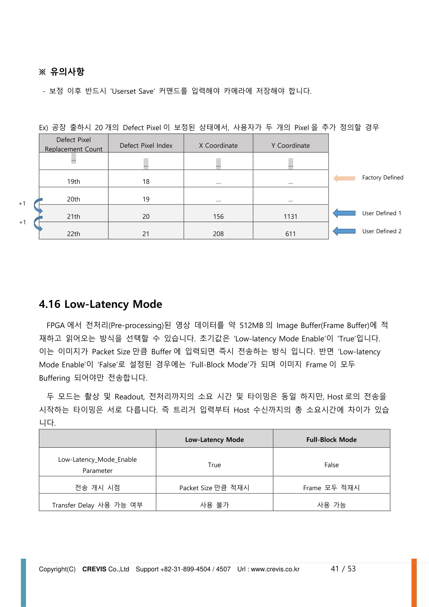
※ 유의사항
- 보정 이후 반드시 ‘Userset Save’ 커맨드를 입력해야 카메라에 저장해야 합니다.
Ex) 공장 출하시 20 개의 Defect Pixel 이 보정된 상태에서, 사용자가 두 개의 Pixel 을 추가 정의할 경우
Defect Pixel
Replacement Count
Defect Pixel Index
X Coordinate
Y Coordinate
…
…
…
…
19th
18
…
…
20th
19
…
…
21th
20
156
1131
22th
21
208
611
4.16 Low-Latency Mode
FPGA 에서 전처리(Pre-processing)된 영상 데이터를 약 512MB 의 Image Buffer(Frame Buffer)에 적
재하고 읽어오는 방식을 선택할 수 있습니다. 초기값은 ‘Low-latency Mode Enable’이 ‘True’입니다.
이는 이미지가 Packet Size 만큼 Buffer 에 입력되면 즉시 전송하는 방식 입니다. 반면 ‘Low-latency
Mode Enable’이 ‘False’로 설정된 경우에는 ‘Full-Block Mode’가 되며 이미지 Frame 이 모두
Buffering 되어야만 전송합니다.
두 모드는 촬상 및 Readout, 전처리까지의 소요 시간 및 타이밍은 동일 하지만, Host 로의 전송을
시작하는 타이밍은 서로 다릅니다. 즉 트리거 입력부터 Host 수신까지의 총 소요시간에 차이가 있습
니다.
Low-Latency Mode
Full-Block Mode
Low-Latency_Mode_Enable
Parameter
True
False
전송 개시 시점
Packet Size 만큼 적재시
Frame 모두 적재시
Transfer Delay 사용 가능 여부
사용 불가
사용 가능
User Defined 1
User Defined 2
Factory Defined
+1
+1
PDF Page 42
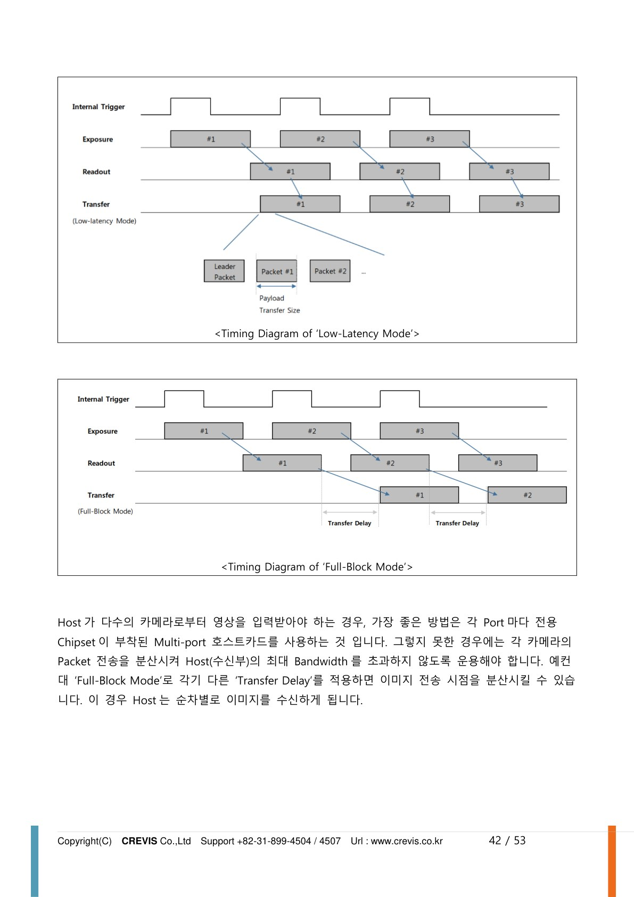
<Timing Diagram of ‘Low-Latency Mode’>
<Timing Diagram of ‘Full-Block Mode’>
Host 가 다수의 카메라로부터 영상을 입력받아야 하는 경우, 가장 좋은 방법은 각 Port 마다 전용
Chipset 이 부착된 Multi-port 호스트카드를 사용하는 것 입니다. 그렇지 못한 경우에는 각 카메라의
Packet 전송을 분산시켜 Host(수신부)의 최대 Bandwidth 를 초과하지 않도록 운용해야 합니다. 예컨
대 ‘Full-Block Mode’로 각기 다른 ‘Transfer Delay’를 적용하면 이미지 전송 시점을 분산시킬 수 있습
니다. 이 경우 Host 는 순차별로 이미지를 수신하게 됩니다.
4.17 Color Transformation Control
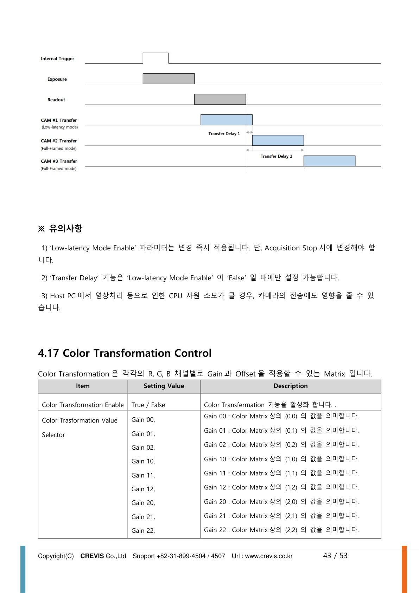
※ 유의사항
1) ‘Low-latency Mode Enable’ 파라미터는 변경 즉시 적용됩니다. 단, Acquisition Stop 시에 변경해야 합
니다.
2) ‘Transfer Delay’ 기능은 ‘Low-latency Mode Enable’ 이 ‘False’ 일 때에만 설정 가능합니다.
3) Host PC 에서 영상처리 등으로 인한 CPU 자원 소모가 클 경우, 카메라의 전송에도 영향을 줄 수 있
습니다.
4.17 Color Transformation Control
Color Transformation 은 각각의 R, G, B 채널별로 Gain 과 Offset 을 적용할 수 있는 Matrix 입니다.
Item
Setting Value
Description
Color Transformation Enable
True / False
Color Transfermation 기능을 활성화 합니다. .
Color Trasformation Value
Selector
Gain 00,
Gain 01,
Gain 02,
Gain 10,
Gain 11,
Gain 12,
Gain 20,
Gain 21,
Gain 22,
Gain 00 : Color Matrix 상의 (0,0) 의 값을 의미합니다.
Gain 01 : Color Matrix 상의 (0,1) 의 값을 의미합니다.
Gain 02 : Color Matrix 상의 (0,2) 의 값을 의미합니다.
Gain 10 : Color Matrix 상의 (1,0) 의 값을 의미합니다.
Gain 11 : Color Matrix 상의 (1,1) 의 값을 의미합니다.
Gain 12 : Color Matrix 상의 (1,2) 의 값을 의미합니다.
Gain 20 : Color Matrix 상의 (2,0) 의 값을 의미합니다.
Gain 21 : Color Matrix 상의 (2,1) 의 값을 의미합니다.
Gain 22 : Color Matrix 상의 (2,2) 의 값을 의미합니다.
4.18 Device Temperature State
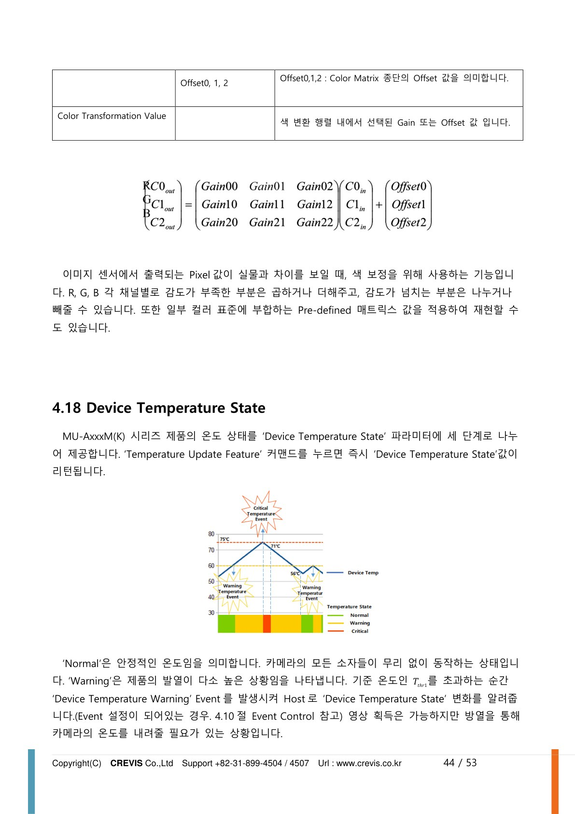
Offset0, 1, 2
Offset0,1,2 : Color Matrix 종단의 Offset 값을 의미합니다.
Color Transformation Value
색 변환 행렬 내에서 선택된 Gain 또는 Offset 값 입니다.
이미지 센서에서 출력되는 Pixel 값이 실물과 차이를 보일 때, 색 보정을 위해 사용하는 기능입니
다. R, G, B 각 채널별로 감도가 부족한 부분은 곱하거나 더해주고, 감도가 넘치는 부분은 나누거나
빼줄 수 있습니다. 또한 일부 컬러 표준에 부합하는 Pre-defined 매트릭스 값을 적용하여 재현할 수
도 있습니다.
4.18 Device Temperature State
MU-AxxxM(K) 시리즈 제품의 온도 상태를 ‘Device Temperature State’ 파라미터에 세 단계로 나누
어 제공합니다. ‘Temperature Update Feature’ 커맨드를 누르면 즉시 ‘Device Temperature State’값이
리턴됩니다.
‘Normal’은 안정적인 온도임을 의미합니다. 카메라의 모든 소자들이 무리 없이 동작하는 상태입니
다. ‘Warning’은 제품의 발열이 다소 높은 상황임을 나타냅니다. 기준 온도인 𝑇𝑡ℎ𝑟1를 초과하는 순간
‘Device Temperature Warning’ Event 를 발생시켜 Host 로 ‘Device Temperature State’ 변화를 알려줍
니다.(Event 설정이 되어있는 경우. 4.10 절 Event Control 참고) 영상 획득은 가능하지만 방열을 통해
카메라의 온도를 내려줄 필요가 있는 상황입니다.
PDF Page 45
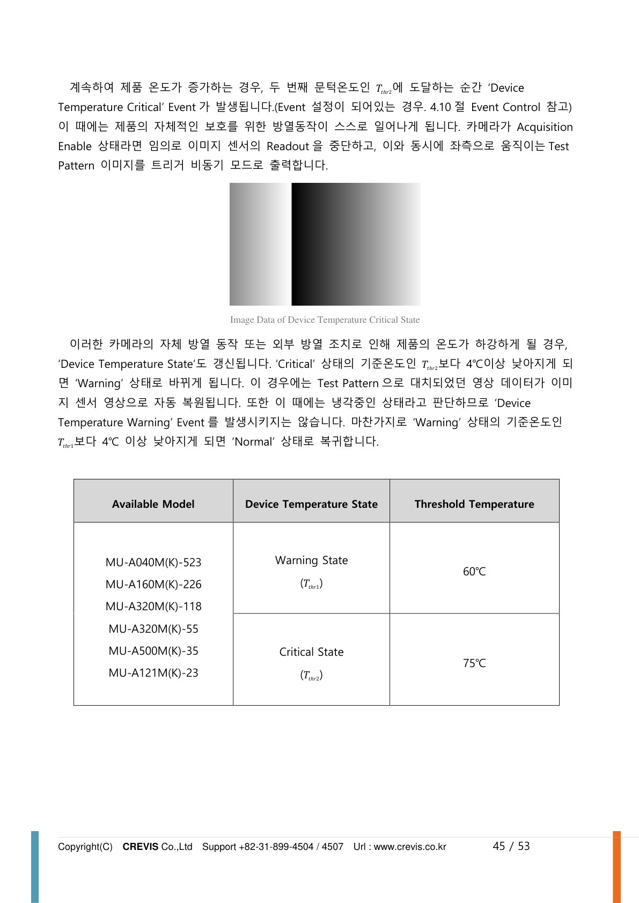
계속하여 제품 온도가 증가하는 경우, 두 번째 문턱온도인 𝑇𝑡ℎ𝑟2에 도달하는 순간 ‘Device
Temperature Critical’ Event 가 발생됩니다.(Event 설정이 되어있는 경우. 4.10 절 Event Control 참고)
이 때에는 제품의 자체적인 보호를 위한 방열동작이 스스로 일어나게 됩니다. 카메라가 Acquisition
Enable 상태라면 임의로 이미지 센서의 Readout 을 중단하고, 이와 동시에 좌측으로 움직이는Test
Pattern 이미지를 트리거 비동기 모드로 출력합니다.
Image Data of Device Temperature Critical State
이러한 카메라의 자체 방열 동작 또는 외부 방열 조치로 인해 제품의 온도가 하강하게 될 경우,
‘Device Temperature State’도 갱신됩니다. ‘Critical’ 상태의 기준온도인 𝑇𝑡ℎ𝑟2보다 4℃이상 낮아지게 되
면 ‘Warning’ 상태로 바뀌게 됩니다. 이 경우에는 Test Pattern 으로 대치되었던 영상 데이터가 이미
지 센서 영상으로 자동 복원됩니다. 또한 이 때에는 냉각중인 상태라고 판단하므로 ‘Device
Temperature Warning’ Event 를 발생시키지는 않습니다. 마찬가지로 ‘Warning’ 상태의 기준온도인
𝑇𝑡ℎ𝑟1보다 4℃ 이상 낮아지게 되면 ‘Normal’ 상태로 복귀합니다.
Available Model
Device Temperature State
Threshold Temperature
MU-A040M(K)-523
MU-A160M(K)-226
MU-A320M(K)-118
MU-A320M(K)-55
MU-A500M(K)-35
MU-A121M(K)-23
Warning State
(𝑇𝑡ℎ𝑟1)
60℃
Critical State
(𝑇𝑡ℎ𝑟2)
75℃
5. 카메라 외관
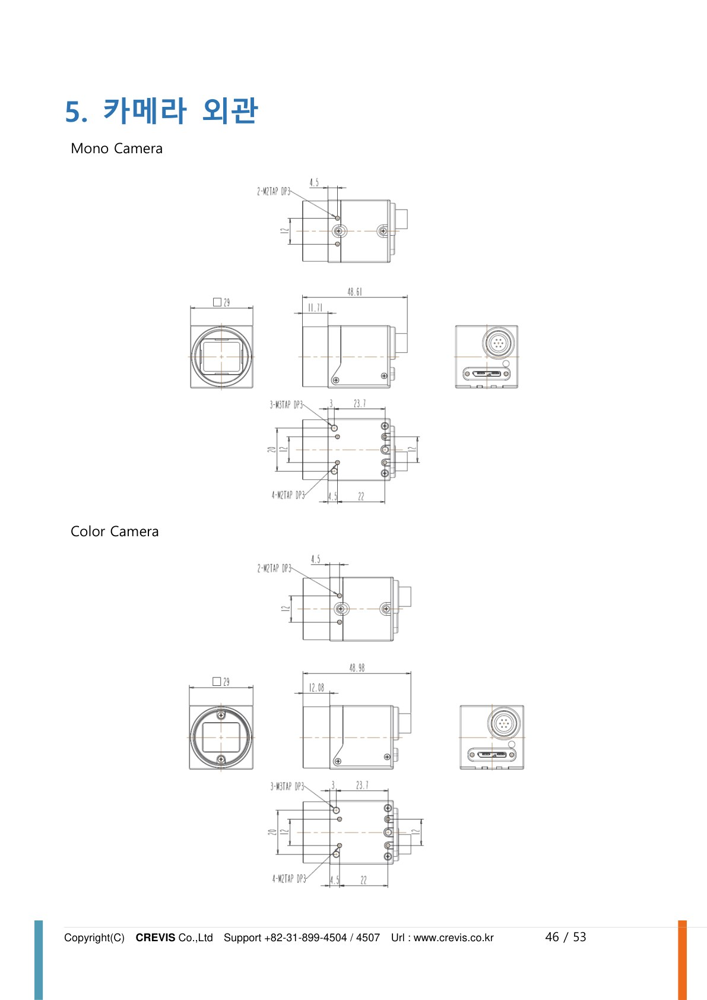
5. 카메라 외관
Mono Camera
Color Camera
# APPENDIX.A
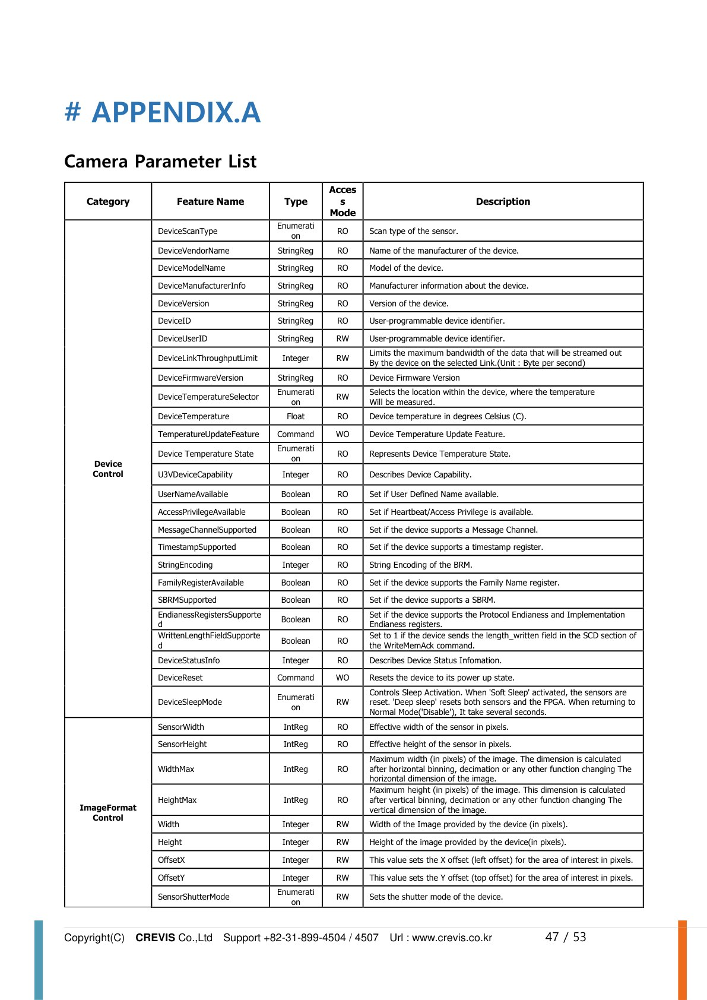
# APPENDIX.A
Camera Parameter List
Category
Feature Name
Type
Acces
s
Mode
Description
Device
Control
DeviceScanType
Enumerati
on
RO
Scan type of the sensor.
DeviceVendorName
StringReg
RO
Name of the manufacturer of the device.
DeviceModelName
StringReg
RO
Model of the device.
DeviceManufacturerInfo
StringReg
RO
Manufacturer information about the device.
DeviceVersion
StringReg
RO
Version of the device.
DeviceID
StringReg
RO
User-programmable device identifier.
DeviceUserID
StringReg
RW
User-programmable device identifier.
DeviceLinkThroughputLimit
Integer
RW
Limits the maximum bandwidth of the data that will be streamed out
By the device on the selected Link.(Unit : Byte per second)
DeviceFirmwareVersion
StringReg
RO
Device Firmware Version
DeviceTemperatureSelector
Enumerati
on
RW
Selects the location within the device, where the temperature
Will be measured.
DeviceTemperature
Float
RO
Device temperature in degrees Celsius (C).
TemperatureUpdateFeature
Command
WO
Device Temperature Update Feature.
Device Temperature State
Enumerati
on
RO
Represents Device Temperature State.
U3VDeviceCapability
Integer
RO
Describes Device Capability.
UserNameAvailable
Boolean
RO
Set if User Defined Name available.
AccessPrivilegeAvailable
Boolean
RO
Set if Heartbeat/Access Privilege is available.
MessageChannelSupported
Boolean
RO
Set if the device supports a Message Channel.
TimestampSupported
Boolean
RO
Set if the device supports a timestamp register.
StringEncoding
Integer
RO
String Encoding of the BRM.
FamilyRegisterAvailable
Boolean
RO
Set if the device supports the Family Name register.
SBRMSupported
Boolean
RO
Set if the device supports a SBRM.
EndianessRegistersSupporte
d
Boolean
RO
Set if the device supports the Protocol Endianess and Implementation
Endianess registers.
WrittenLengthFieldSupporte
d
Boolean
RO
Set to 1 if the device sends the length_written field in the SCD section of
the WriteMemAck command.
DeviceStatusInfo
Integer
RO
Describes Device Status Infomation.
DeviceReset
Command
WO
Resets the device to its power up state.
DeviceSleepMode
Enumerati
on
RW
Controls Sleep Activation. When 'Soft Sleep' activated, the sensors are
reset. 'Deep sleep' resets both sensors and the FPGA. When returning to
Normal Mode('Disable'), It take several seconds.
ImageFormat
Control
SensorWidth
IntReg
RO
Effective width of the sensor in pixels.
SensorHeight
IntReg
RO
Effective height of the sensor in pixels.
WidthMax
IntReg
RO
Maximum width (in pixels) of the image. The dimension is calculated
after horizontal binning, decimation or any other function changing The
horizontal dimension of the image.
HeightMax
IntReg
RO
Maximum height (in pixels) of the image. This dimension is calculated
after vertical binning, decimation or any other function changing The
vertical dimension of the image.
Width
Integer
RW
Width of the Image provided by the device (in pixels).
Height
Integer
RW
Height of the image provided by the device(in pixels).
OffsetX
Integer
RW
This value sets the X offset (left offset) for the area of interest in pixels.
OffsetY
Integer
RW
This value sets the Y offset (top offset) for the area of interest in pixels.
SensorShutterMode
Enumerati
on
RW
Sets the shutter mode of the device.
PDF Page 48
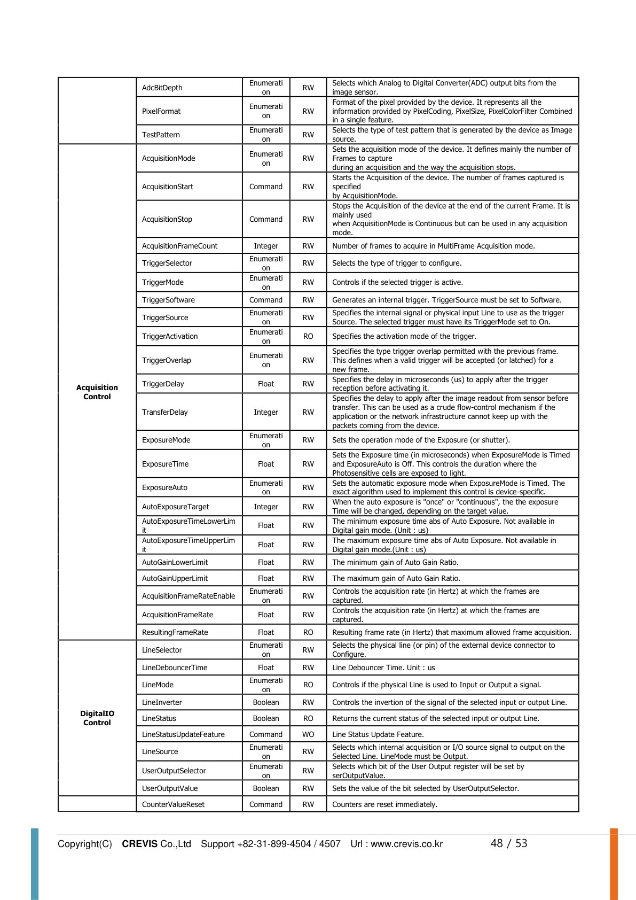
AdcBitDepth
Enumerati
on
RW
Selects which Analog to Digital Converter(ADC) output bits from the
image sensor.
PixelFormat
Enumerati
on
RW
Format of the pixel provided by the device. It represents all the
information provided by PixelCoding, PixelSize, PixelColorFilter Combined
in a single feature.
TestPattern
Enumerati
on
RW
Selects the type of test pattern that is generated by the device as Image
source.
Acquisition
Control
AcquisitionMode
Enumerati
on
RW
Sets the acquisition mode of the device. It defines mainly the number of
Frames to capture
during an acquisition and the way the acquisition stops.
AcquisitionStart
Command
RW
Starts the Acquisition of the device. The number of frames captured is
specified
by AcquisitionMode.
AcquisitionStop
Command
RW
Stops the Acquisition of the device at the end of the current Frame. It is
mainly used
when AcquisitionMode is Continuous but can be used in any acquisition
mode.
AcquisitionFrameCount
Integer
RW
Number of frames to acquire in MultiFrame Acquisition mode.
TriggerSelector
Enumerati
on
RW
Selects the type of trigger to configure.
TriggerMode
Enumerati
on
RW
Controls if the selected trigger is active.
TriggerSoftware
Command
RW
Generates an internal trigger. TriggerSource must be set to Software.
TriggerSource
Enumerati
on
RW
Specifies the internal signal or physical input Line to use as the trigger
Source. The selected trigger must have its TriggerMode set to On.
TriggerActivation
Enumerati
on
RO
Specifies the activation mode of the trigger.
TriggerOverlap
Enumerati
on
RW
Specifies the type trigger overlap permitted with the previous frame.
This defines when a valid trigger will be accepted (or latched) for a
new frame.
TriggerDelay
Float
RW
Specifies the delay in microseconds (us) to apply after the trigger
reception before activating it.
TransferDelay
Integer
RW
Specifies the delay to apply after the image readout from sensor before
transfer. This can be used as a crude flow-control mechanism if the
application or the network infrastructure cannot keep up with the
packets coming from the device.
ExposureMode
Enumerati
on
RW
Sets the operation mode of the Exposure (or shutter).
ExposureTime
Float
RW
Sets the Exposure time (in microseconds) when ExposureMode is Timed
and ExposureAuto is Off. This controls the duration where the
Photosensitive cells are exposed to light.
ExposureAuto
Enumerati
on
RW
Sets the automatic exposure mode when ExposureMode is Timed. The
exact algorithm used to implement this control is device-specific.
AutoExposureTarget
Integer
RW
When the auto exposure is "once" or "continuous", the the exposure
Time will be changed, depending on the target value.
AutoExposureTimeLowerLim
it
Float
RW
The minimum exposure time abs of Auto Exposure. Not available in
Digital gain mode. (Unit : us)
AutoExposureTimeUpperLim
it
Float
RW
The maximum exposure time abs of Auto Exposure. Not available in
Digital gain mode.(Unit : us)
AutoGainLowerLimit
Float
RW
The minimum gain of Auto Gain Ratio.
AutoGainUpperLimit
Float
RW
The maximum gain of Auto Gain Ratio.
AcquisitionFrameRateEnable
Enumerati
on
RW
Controls the acquisition rate (in Hertz) at which the frames are
captured.
AcquisitionFrameRate
Float
RW
Controls the acquisition rate (in Hertz) at which the frames are
captured.
ResultingFrameRate
Float
RO
Resulting frame rate (in Hertz) that maximum allowed frame acquisition.
DigitalIO
Control
LineSelector
Enumerati
on
RW
Selects the physical line (or pin) of the external device connector to
Configure.
LineDebouncerTime
Float
RW
Line Debouncer Time. Unit : us
LineMode
Enumerati
on
RO
Controls if the physical Line is used to Input or Output a signal.
LineInverter
Boolean
RW
Controls the invertion of the signal of the selected input or output Line.
LineStatus
Boolean
RO
Returns the current status of the selected input or output Line.
LineStatusUpdateFeature
Command
WO
Line Status Update Feature.
LineSource
Enumerati
on
RW
Selects which internal acquisition or I/O source signal to output on the
Selected Line. LineMode must be Output.
UserOutputSelector
Enumerati
on
RW
Selects which bit of the User Output register will be set by
serOutputValue.
UserOutputValue
Boolean
RW
Sets the value of the bit selected by UserOutputSelector.
CounterValueReset
Command
RW
Counters are reset immediately.
PDF Page 49
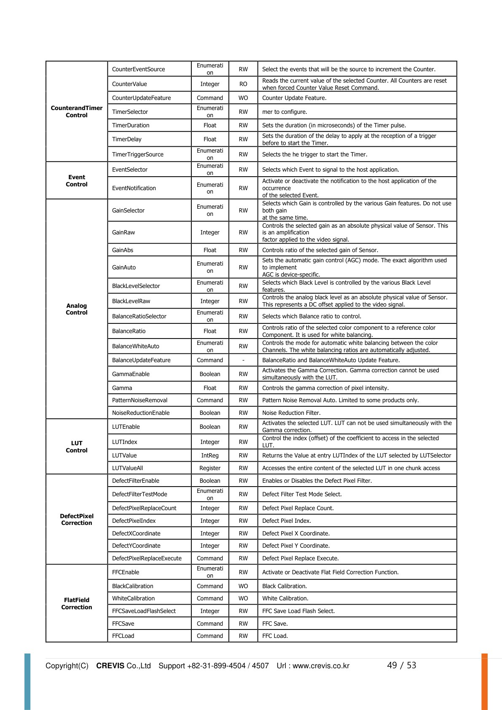
CounterandTimer
Control
CounterEventSource
Enumerati
on
RW
Select the events that will be the source to increment the Counter.
CounterValue
Integer
RO
Reads the current value of the selected Counter. All Counters are reset
when forced Counter Value Reset Command.
CounterUpdateFeature
Command
WO
Counter Update Feature.
TimerSelector
Enumerati
on
RW
mer to configure.
TimerDuration
Float
RW
Sets the duration (in microseconds) of the Timer pulse.
TimerDelay
Float
RW
Sets the duration of the delay to apply at the reception of a trigger
before to start the Timer.
TimerTriggerSource
Enumerati
on
RW
Selects the he trigger to start the Timer.
Event
Control
EventSelector
Enumerati
on
RW
Selects which Event to signal to the host application.
EventNotification
Enumerati
on
RW
Activate or deactivate the notification to the host application of the
occurrence
of the selected Event.
Analog
Control
GainSelector
Enumerati
on
RW
Selects which Gain is controlled by the various Gain features. Do not use
both gain
at the same time.
GainRaw
Integer
RW
Controls the selected gain as an absolute physical value of Sensor. This
is an amplification
factor applied to the video signal.
GainAbs
Float
RW
Controls ratio of the selected gain of Sensor.
GainAuto
Enumerati
on
RW
Sets the automatic gain control (AGC) mode. The exact algorithm used
to implement
AGC is device-specific.
BlackLevelSelector
Enumerati
on
RW
Selects which Black Level is controlled by the various Black Level
features.
BlackLevelRaw
Integer
RW
Controls the analog black level as an absolute physical value of Sensor.
This represents a DC offset applied to the video signal.
BalanceRatioSelector
Enumerati
on
RW
Selects which Balance ratio to control.
BalanceRatio
Float
RW
Controls ratio of the selected color component to a reference color
Component. It is used for white balancing.
BalanceWhiteAuto
Enumerati
on
RW
Controls the mode for automatic white balancing between the color
Channels. The white balancing ratios are automatically adjusted.
BalanceUpdateFeature
Command
-
BalanceRatio and BalanceWhiteAuto Update Feature.
GammaEnable
Boolean
RW
Activates the Gamma Correction. Gamma correction cannot be used
simultaneously with the LUT.
Gamma
Float
RW
Controls the gamma correction of pixel intensity.
PatternNoiseRemoval
Command
RW
Pattern Noise Removal Auto. Limited to some products only.
NoiseReductionEnable
Boolean
RW
Noise Reduction Filter.
LUT
Control
LUTEnable
Boolean
RW
Activates the selected LUT. LUT can not be used simultaneously with the
Gamma correction.
LUTIndex
Integer
RW
Control the index (offset) of the coefficient to access in the selected
LUT.
LUTValue
IntReg
RW
Returns the Value at entry LUTIndex of the LUT selected by LUTSelector
LUTValueAll
Register
RW
Accesses the entire content of the selected LUT in one chunk access
DefectPixel
Correction
DefectFilterEnable
Boolean
RW
Enables or Disables the Defect Pixel Filter.
DefectFilterTestMode
Enumerati
on
RW
Defect Filter Test Mode Select.
DefectPixelReplaceCount
Integer
RW
Defect Pixel Replace Count.
DefectPixelIndex
Integer
RW
Defect Pixel Index.
DefectXCoordinate
Integer
RW
Defect Pixel X Coordinate.
DefectYCoordinate
Integer
RW
Defect Pixel Y Coordinate.
DefectPixelReplaceExecute
Command
RW
Defect Pixel Replace Execute.
FlatField
Correction
FFCEnable
Enumerati
on
RW
Activate or Deactivate Flat Field Correction Function.
BlackCalibration
Command
WO
Black Calibration.
WhiteCalibration
Command
WO
White Calibration.
FFCSaveLoadFlashSelect
Integer
RW
FFC Save Load Flash Select.
FFCSave
Command
RW
FFC Save.
FFCLoad
Command
RW
FFC Load.
PDF Page 50
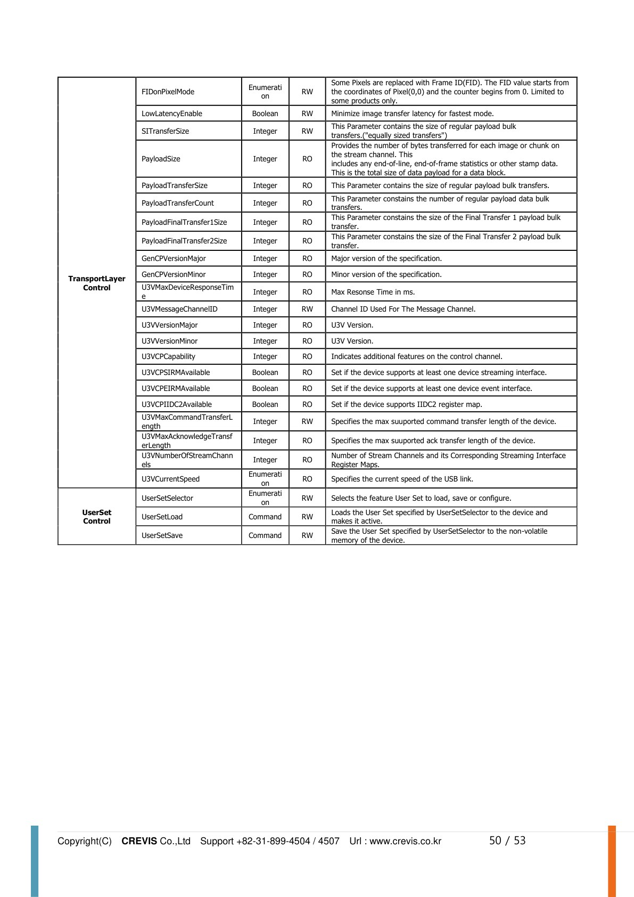
TransportLayer
Control
FIDonPixelMode
Enumerati
on
RW
Some Pixels are replaced with Frame ID(FID). The FID value starts from
the coordinates of Pixel(0,0) and the counter begins from 0. Limited to
some products only.
LowLatencyEnable
Boolean
RW
Minimize image transfer latency for fastest mode.
SITransferSize
Integer
RW
This Parameter contains the size of regular payload bulk
transfers.("equally sized transfers")
PayloadSize
Integer
RO
Provides the number of bytes transferred for each image or chunk on
the stream channel. This
includes any end-of-line, end-of-frame statistics or other stamp data.
This is the total size of data payload for a data block.
PayloadTransferSize
Integer
RO
This Parameter contains the size of regular payload bulk transfers.
PayloadTransferCount
Integer
RO
This Parameter constains the number of regular payload data bulk
transfers.
PayloadFinalTransfer1Size
Integer
RO
This Parameter constains the size of the Final Transfer 1 payload bulk
transfer.
PayloadFinalTransfer2Size
Integer
RO
This Parameter constains the size of the Final Transfer 2 payload bulk
transfer.
GenCPVersionMajor
Integer
RO
Major version of the specification.
GenCPVersionMinor
Integer
RO
Minor version of the specification.
U3VMaxDeviceResponseTim
e
Integer
RO
Max Resonse Time in ms.
U3VMessageChannelID
Integer
RW
Channel ID Used For The Message Channel.
U3VVersionMajor
Integer
RO
U3V Version.
U3VVersionMinor
Integer
RO
U3V Version.
U3VCPCapability
Integer
RO
Indicates additional features on the control channel.
U3VCPSIRMAvailable
Boolean
RO
Set if the device supports at least one device streaming interface.
U3VCPEIRMAvailable
Boolean
RO
Set if the device supports at least one device event interface.
U3VCPIIDC2Available
Boolean
RO
Set if the device supports IIDC2 register map.
U3VMaxCommandTransferL
ength
Integer
RW
Specifies the max suuported command transfer length of the device.
U3VMaxAcknowledgeTransf
erLength
Integer
RO
Specifies the max suuported ack transfer length of the device.
U3VNumberOfStreamChann
els
Integer
RO
Number of Stream Channels and its Corresponding Streaming Interface
Register Maps.
U3VCurrentSpeed
Enumerati
on
RO
Specifies the current speed of the USB link.
UserSet
Control
UserSetSelector
Enumerati
on
RW
Selects the feature User Set to load, save or configure.
UserSetLoad
Command
RW
Loads the User Set specified by UserSetSelector to the device and
makes it active.
UserSetSave
Command
RW
Save the User Set specified by UserSetSelector to the non-volatile
memory of the device.
# APPENDIX.B
# APPENDIX.B
1. SDK 설치
- 다운로드 링크 : http://www.crevis.co.kr/kor/support/download/MCam40_SDK.zip
- 운영체제에 맞는 설치 프로그램을 설치
MCam40_SDK_V4.5.0(x64).exe : 윈도우 64 비트용 설치 프로그램
MCam40_SDK_V4.5.0(x86).exe : 윈도우 32 비트용 설치 프로그램
* 버전은 향후에 업데이트 될 수 있습니다.
2. 카메라 통신 연결 방법
2.1 CamGuide 실행
- Device View Tab 을 선택합니다.
- U3V-Interface_U3Vision 목록에 카메라가 없을 경우 을 클릭하여 재확인 바랍니다.
2.2 Select and Connect Camera : 설정하고자 하는 카메라를 더블 클릭합니다.
2.3 카메라 설정
PDF Page 52
- Feature Properties Tab 을 선택합니다.
* 상세 설명은 CamGuide 매뉴얼 참조
Revision History
Revision History
Revision
Date
Changes
Remark
0.1
2020.5
Draft Version Issued
0.3
2020.06
Exposure Start Delay (2HD → 3HD)
Chunk Data Control
0.6
2020. 08
Gain Abs / Gain Raw Range
Hardware Delay (p.23)
Line Block Diagram (p.30)
Mechanical Drawing (p.45)
0.8
2020. 12
Device Temperature State (p.44)
1.0
2021. 02
Released
1.1
2021. 03
Specification (Digital Gain Range)